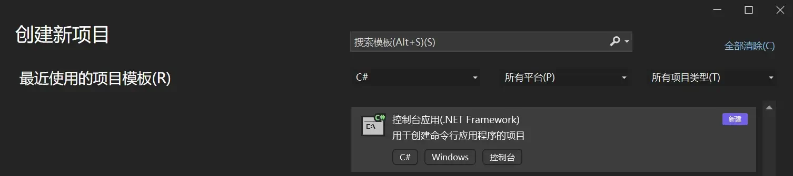
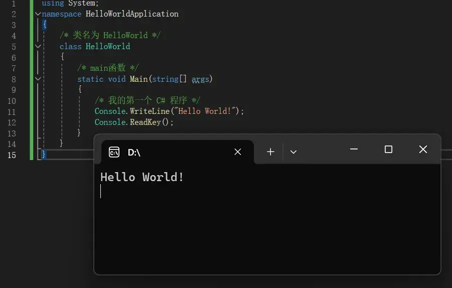
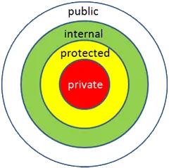

正文
基础语法
Hello world

VS 里创建一个 控制台应用(.NET Framework)。

开始 Hello World！
1 2 3 4 5 6 7 8 9 10 11 12 13 14 15 using System;namespace HelloWorldApplication class HelloWorld static void Main (string [] args"Hello World!" );
C# 环境
C# 是 .Net 框架的一部分.Net 应用程序。
Unity 使用开源 .NET 平台，以确保使用 Unity 创建的应用程序可以在各种不同的硬件配置上运行。
.Net 框架是一个创新的平台，能帮您编写出下面类型的应用程序：
Windows 应用程序
Web 应用程序
Web 服务
C# 程序结构
一个 C# 程序主要包括以下部分：
命名空间声明（Namespace declaration）
一个 class
Class 方法
Class 属性
一个 Main 方法
语句（Statements）& 表达式（Expressions）
注释
1 2 3 4 5 6 7 8 9 10 11 12 13 using System; namespace HelloWorldApplication class HelloWorld static void Main (string [] args"Hello World" );
C# 基本语法
C# 是一种面向对象的编程语言。在面向对象的程序设计方法中，程序由各种相互交互的对象组成。相同种类的对象通常具有相同的类型，或者说，是在相同的 class 中。
例如，以 Rectangle（矩形）对象为例。它具有 length 和 width 属性。根据设计，它可能需要接受这些属性值、计算面积和显示细节。
1 2 3 4 5 6 7 8 9 10 11 12 13 14 15 16 17 18 19 20 21 22 23 24 25 26 27 28 29 30 31 32 33 34 35 36 using System;namespace RectangleApplication class Rectangle double length;double width;public void Acceptdetails ()4.5 ; 3.5 ;public double GetArea ()return length * width;public void Display ()"Length: {0}" , length);"Width: {0}" , width);"Area: {0}" , GetArea());class ExecuteRectangle static void Main (string [] argsnew Rectangle();
1 2 3 Length: 4.5
C# 数据类型
在 C# 中，变量分为以下几种类型：
值类型（Value types）
引用类型（Reference types）
指针类型（Pointer types）
值类型（Value types）
1 2 3 4 5 6 7 8 9 10 11 12 13 14 15 16 17 18 19 20 21 22 23 24 25 26 27 28 29 30 31 32 33 34 35 36 37 38 using System;namespace ConsoleApplication1 class Program static void Main (string [] argsstatic void PrintValueTypeRange ()"int 类型的最大值是：{0}" , int .MaxValue); "uint 类型的最大值是：{0}" , uint .MaxValue); "byte 类型的最大值是：{0}" , byte .MaxValue); "sbyte 类型的最大值是：{0}" , sbyte .MaxValue); "short 类型的最大值是：{0}" , short .MaxValue); "ushort 类型的最大值是：{0}" , ushort .MaxValue); "long 类型的最大值是：{0}" , long .MaxValue); "ulong 类型的最大值是：{0}" , ulong .MaxValue); "float 类型的最大值是：{0}" , float .MaxValue); "double 类型的最大值是：{0}" , double .MaxValue); "decimal 类型的最大值是：{0}" , decimal .MaxValue); "int 类型的最小值是：{0}" , int .MinValue);"uint 类型的最小值是：{0}" , uint .MinValue);"byte 类型的最小值是：{0}" , byte .MinValue);"sbyte 类型的最小值是：{0}" , sbyte .MinValue);"short 类型的最小值是：{0}" , short .MinValue);"ushort 类型的最小值是：{0}" , ushort .MinValue);"long 类型的最小值是：{0}" , long .MinValue);"ulong 类型的最小值是：{0}" , ulong .MinValue);"float 类型的最小值是：{0}" , float .MinValue);"double 类型的最小值是：{0}" , double .MinValue);"decimal 类型的最小值是：{0}" , decimal .MinValue);
1 2 3 4 5 6 7 8 9 10 11 12 13 14 15 16 17 18 19 20 21 22 int 类型的最大值是：2147483647
Decimal 不是浮点数据类型。Decimal 结构包含一个二进制整数值以及一个符号位和一个整数比例因子，该比例因子用于指定该值的小数部分。因此，在内存中，Decimal 数字的表示形式比浮点类型（Single 和 Double）更精确。Decimal 数据类型用于存储精确的小数值。与 Float 和 Double 等浮点数数据类型相比，Decimal 能够提供更高的精度，避免了浮点数计算中的舍入误差。
如需得到一个类型或一个变量在特定平台上的准确尺寸，可以使用 sizeof 方法。表达式 sizeof(type) 产生以字节为单位存储对象或类型的存储尺寸。
1 2 3 4 5 6 7 8 9 10 11 12 13 14 15 16 17 18 19 using System;namespace DataTypeApplication class Program static void Main (string [] args"Size of bool: {0}" , sizeof (bool ));"Size of byte: {0}" , sizeof (byte ));"Size of sbyte: {0}" , sizeof (sbyte ));"Size of int: {0}" , sizeof (int ));"Size of float: {0}" , sizeof (float ));"Size of double: {0}" , sizeof (double ));"Size of decimal: {0}" , sizeof (decimal ));
1 2 3 4 5 6 7 Size of bool: 1
对象（Object）类型
对象（Object）类型 是 C# 通用类型系统（Common Type System - CTS）中所有数据类型的终极基类。Object 是 System.Object 类的别名。所以对象（Object）类型可以被分配任何其他类型（值类型、引用类型、预定义类型或用户自定义类型）的值。但是，在分配值之前，需要先进行类型转换。
当一个值类型转换为对象类型时，则被称为装箱 ；另一方面，当一个对象类型转换为值类型时，则被称为拆箱 。
1 2 3 4 5 6 7 8 9 10 11 12 13 14 15 16 17 18 19 20 21 22 using System;namespace Test class Program static void Main (string [] argsint original = 10 ;object boxed = original;int unboxed = (int )boxed;$"原始值：{original} " );$"拆箱后的值：{unboxed} " );
动态（Dynamic）类型
您可以存储任何类型的值在动态数据类型变量中。这些变量的类型检查是在运行时发生的。
声明动态类型的语法：
动态类型与对象类型相似，但是对象类型变量的类型检查是在编译时发生的 ，而动态类型变量的类型检查是在运行时发生的 。
静态类型语言也被称为强类型语言。所谓强类型语言，通俗的讲，就是在编译过程中执行类型检查的语言。我们举个简单的例子，比如我们知道一个方法的返回类型，但是如果返回类型过于复杂，那么我推荐你使用 var。但是，当你明确知道返回类型时，或者返回的只是简单类型，那么我推荐你直接使用该数据类型来声明方法返回类型，就像平时我们经常用 string、int、bool 等修饰符声明返回类型一样。
var 和 dynamic 关键字之间的主要区别在于绑定时间不一样：var 是早期绑定，dynamic 绑定则会在运行时进行。
var 实际上是编译器抛给我们的语法糖，一旦被编译，编译器就会自动匹配 var 变量的实际类型，并用实际类型来替换该变量的声明，等同于我们在编码时使用了实际类型声明。而 dynamic 被编译后是一个 Object 类型，编译器编译时不会对 dynamic 进行类型检查。
字符串（String）类型
字符串（String）类型 允许您给变量分配任何字符串值。字符串（String）类型是 System.String 类的别名。它是从对象（Object）类型派生的。字符串（String）类型的值可以通过两种形式进行分配：引号 和 @引号。
例如：
1 string str = "runoob.com" ;
C# string 字符串的前面可以加 @（称作"逐字字符串"）将转义字符\当作普通字符对待（类似于 python 里的原始字符串前缀 r？），比如：
1 string str = @"C:\Windows" ;
等价于：
1 string str = "C:\\Windows" ;
@ 字符串中可以任意换行，换行符及缩进空格都计算在字符串长度之内 。
1 2 3 4 5 6 7 8 9 10 11 12 13 14 15 16 17 using System;namespace Test class Program static void Main (string [] argsstring str = @"<script type=""text/javascript""> <!-- --> </script>" ;
1 2 3 4 <script>
用户自定义引用类型有：class、interface 或 delegate。我们将在以后的章节中讨论这些类型。
指针类型（Pointer types）
指针类型变量存储另一种类型的内存地址。C# 中的指针与 C 或 C++ 中的指针有相同的功能。
C# 类型转换
C# 中的类型转换可以分为两种：隐式类型转换 和显式类型转换 （也称为强制类型转换）。
隐式类型转换
隐式转换是不需要编写代码来指定的转换，编译器会自动进行。
隐式转换是指将一个较小范围的数据类型转换为较大范围的数据类型时 （如，从 int 到 long，从 float 到 double 等），编译器会自动完成类型转换，这些转换是 C# 默认的以安全方式进行的转换，不会导致数据丢失 。
显式转换
显式类型转换，即强制类型转换，需要程序员在代码中明确指定。
显式转换是指将一个较大范围的数据类型转换为较小范围的数据类型时，或者将一个对象类型转换为另一个对象类型时，需要使用强制类型转换符号进行显示转换，强制转换（可能）会造成数据丢失 。
1 2 3 4 5 6 7 8 9 10 11 12 13 14 15 16 17 18 using System;namespace Test class Program static void Main (string [] argsdouble a = 3.141592653589 ;float b = 3.141592653589f ;"" );float )a + "" );
1 2 3 3.141592653589
C# 类型转换方法
使用 System.Convert 类中的函数来进行类型转换。提供了一种安全的方式来执行类型转换，因为它们可以处理 null 值，如果转换不可能进行，则会抛出异常 。
为什么 C# 没有 System.Convert.ToFloat()？
有。但它被称为 Convert.ToSingle()。float 是类型 System.Single 的 C# 别名。
“Single”是 BCL 中浮点数的名称。“float” 是 C# 提供的别名。有一个 Convert.ToSingle() 方法，就像有 Convert.ToInt32() 而不是 Convert.ToInt()。
float, int 这种类型只是 C# 的语法糖而已，在 .NET 框架中他们是 Single，Int32 等等。因此，Convert.ToFloat() 实际上是 Convert.ToSingle。
《CLR via C#》的作者推荐永远不要使用 int, short, float 等等，而是使用 Int32, Int16, Single 这些原生类型，这样在跨语言编程时才不会由于某种特定语言的特性而都不同类型产生迷惑。（说得好我还是接着用）
1 2 3 4 5 6 7 8 9 10 11 12 13 14 15 16 17 18 19 20 21 using System;namespace Test class Program static void Main (string [] argsstring a = "3.1415926535" ;float b = Convert.ToSingle(a);double d = Convert.ToDouble(a);
1 2 3 4 3.1415926535
.ToString() 可将特定类型转换为字符串，当然也可以使用 +""。
1 2 3 4 5 6 7 8 9 10 11 12 13 14 15 16 17 18 19 20 using System;namespace TypeConversionApplication class StringConversion static void Main (string [] argsint i = 75 ;float f = 53.005f ;double d = 2345.7652 ;bool b = true ;
使用 Parse 方法
Parse 方法用于将字符串转换为对应的数值类型，如果转换失败会抛出异常。
1 2 string str = "123.45" ;double d = double .Parse(str);
使用 TryParse 方法
TryParse 方法类似于 Parse，但它不会抛出异常，而是返回一个布尔值指示转换是否成功。
1 2 3 4 5 6 7 8 9 10 11 12 13 14 15 16 17 18 19 20 21 22 23 24 25 26 27 28 29 30 31 32 33 34 35 36 37 using System;namespace Test class Program static void Main (string [] argsstring str = "123.45" ;double d;bool success = double .TryParse(str, out d);if (success)"转换成功: " + d);else "转换失败" );int i;int .TryParse(str, out i);if (success)"转换成功: " + i);else "转换失败" );
自定义类型转换
C# 还允许你定义自定义类型转换操作，通过在类型中定义 implicit 或 explicit 关键字。
1 2 3 4 5 6 7 8 9 10 11 12 13 14 15 16 17 18 19 20 21 22 23 24 25 26 27 28 29 30 31 32 33 34 35 36 37 38 39 40 41 42 43 44 45 46 47 48 49 50 51 using System;public class Fahrenheit public double Degrees { get ; set ; }public Fahrenheit (double degreespublic static implicit operator Celsius (Fahrenheit f )return new Celsius((f.Degrees - 32 ) / 1.8 );public static explicit operator Fahrenheit (Celsius c )return new Fahrenheit(32 + c.Degrees * 1.8 );public class Celsius public double Degrees { get ; set ; }public Celsius (double degreespublic class Program public static void Main ()new Celsius(37 );new Fahrenheit(98.6 );"°C" );"°F" );"°C" );"°F" );
implicit 定义隐式转换。
explicit 定义显示转换。
operator 关键字的主要作用是用来重载运算符的，还可以用于类或结构中类型的自定义转换。
C# 变量
一个变量只不过是一个供程序操作的存储区的名字 。
C# 中的变量定义
在 C# 中，变量的命名需要遵循一些规则：
变量名可以包含字母、数字和下划线。
变量名必须以字母或下划线开头。
变量名区分大小写。
避免使用 C# 的关键字作为变量名。
C# 中的变量初始化
正确地初始化变量是一个良好的编程习惯，否则有时程序会产生意想不到的结果。
1 2 3 4 5 6 7 8 9 10 11 12 13 14 15 16 17 18 19 20 21 using System;namespace VariableDefinition class Program static void Main (string [] argsshort a;int b;double c;10 ;20 ;"a = {0}, b = {1}, c = {2}" , a, b, c);
接受来自用户的值
System 命名空间中的 Console 类提供了一个函数 ReadLine() ，用于接收来自用户的输入，并把它存储到一个变量中。（类似 scanf()）
1 2 3 4 5 6 7 8 9 10 11 12 13 14 15 using System;namespace VariableDefinition class Program static void Main (string [] argsint num;
C# 中的 Lvalues 和 Rvalues
C# 中的两种表达式：
lvalue ：lvalue 表达式可以出现在赋值语句的左边或右边。rvalue ：rvalue 表达式可以出现在赋值语句的右边，不能出现在赋值语句的左边。
变量是 lvalue 的，所以可以出现在赋值语句的左边。数值是 rvalue 的，因此不能被赋值，不能出现在赋值语句的左边。下面是一个有效的语句：
下面是一个无效的语句，会产生编译时错误：
C# 变量作用域
在 C# 中，变量的作用域定义了变量的可见性和生命周期。
变量的作用域通常由花括号 {} 定义的代码块来确定 。
方法参数作用域
C# 是完全面向对象的语言，因此全局变量 最高能只能放在类定义下：
1 2 3 4 class MyClass int memberVar = 30 ;
静态变量作用域
static 静态变量是在类级别上声明的，但它们的作用域也受限于其定义的类。
1 2 3 4 class MyClass static int staticVar = 40 ;
循环变量作用域
在 for 循环中声明的循环变量在循环体内可见。
1 2 3 4 5 for (int i = 0 ; i < 5 ; i++)
总体而言，变量的作用域有助于管理变量的可见性和生命周期，确保变量在其有效范围内使用，也有助于防止命名冲突。
C# 常量
常量可以被当作常规的变量，只是它们的值在定义后不能被修改。
整数常量
整数常量可以是十进制、八进制或十六进制的常量。
前缀 指定基数
0x 或 0X 表示十六进制
0 表示八进制
没有前缀则表示十进制
整数常量也可以有后缀 ，可以是 U 和 L 的组合，其中：
1 2 3 4 5 6 7 8 9 10 11 12 13 14 using System;namespace VariableDefinition class Program static void Main (string [] argsvar num = 0xFee L;
浮点常量
一个浮点常量是由整数部分、小数点、小数部分和指数部分组成。您可以使用小数形式或者指数形式来表示浮点常量。
原网页认为 314159E-5L 是合法的，然而测试的时候不合法，只有 314159E-5 合法。
字符常量
1 2 3 4 5 6 7 8 9 10 11 namespace EscapeChar class Program static void Main (string [] args"Hello\tWorld\n\n" );
之类的。
字符串常量
1 2 3 4 5 6 7 8 9 10 11 12 string a = "hello, world" ; string b = @"hello, world" ; string c = "hello \t world" ; string d = @"hello \t world" ; string e = "Joe said \"Hello\" to me" ; string f = @"Joe said ""Hello"" to me" ; string g = "\\\\server\\share\\file.txt" ; string h = @"\\server\share\file.txt" ; string i = "one\r\ntwo\r\nthree" ;string j = @"one two three" ;
回车（Carriage Return）和换行（Newline）是两个相关但不同的概念，它们通常一起使用来控制文本在显示或存储时的布局和格式。
回车 (\r) ：
回车是一个控制字符，通常表示光标移动到当前行的开头 ，而不移动到下一行的开头。在早期的打字机和电传打字机中，回车操作会将打印头移回到纸带或打字机纸的左侧（或称为回车位置），这样打印机可以在新行开始时从左侧开始打印。
在计算机领域中，回车通常表示 ASCII 字符中的值为 13（0x0D）。
换行 (\n) ：
换行是另一个控制字符，用于指示应该在当前位置插入一个新行。它通常使光标移动到下一行的开头 ，以便从新的行开始写入文本。
在计算机领域中，换行通常表示 ASCII 字符中的值为 10（0x0A）。
在现代操作系统中，特别是在 Windows、Unix/Linux 和 macOS 等操作系统中，通常使用 \r\n 组合来表示文本文件中的换行符。Windows 使用 \r\n 作为标准换行符，而 Unix 和 Linux 系统通常只使用 \n。这种差异可以导致在跨平台处理文本文件时出现格式化问题。
总结来说：
回车 (\r) ：将光标移动到当前行的开头。换行 (\n) ：将光标移动到下一行的开头，并且可以包含在回车操作中一起使用，以实现在文本中的适当布局和格式。
定义常量
常量是使用 const 关键字来定义的。
C# 运算符
基本跟 C/C++ 差不多，记一点没接触过的。
is 判断对象是否为某一类型。
1 2 3 4 5 6 7 8 9 10 11 12 13 14 using System;namespace VariableDefinition class Program static void Main (string [] argsdynamic a = 3.14 ;is float );
as 强制转换，即使转换失败也不会抛出异常（改为返回 null）。
1 2 3 4 5 6 7 8 9 10 11 12 13 14 15 16 17 18 19 20 21 22 23 24 25 26 27 28 29 30 31 32 33 34 using System;namespace AsOperatorExample class Program static void Main (string [] argsobject obj = "This is a string" ;string str = obj as string ;if (str != null )"The object was successfully cast to a string." );else "The object could not be cast to a string." );123 ;as string ;if (str == null )"The object could not be cast to a string because it is not a compatible type." );
1 2 3 The object was successfully cast to a string.
typeof() 返回 class 的类型。
1 2 3 4 5 6 7 8 9 10 11 using System;class Program static void Main (string [] argstypeof (string );
C# 判断
与 C/C++ 一致。
C# 循环
C# 定义一个数组：
1 int [] fibarray = new int [] { 0 , 1 , 1 , 2 , 3 , 5 , 8 , 13 };
C# 定义一个列表：
1 2 3 4 5 6 7 string > myStrings = new List<string >();"Google" );"Runoob" );"Taobao" );
循环语法大都与 C/C++ 一致。试一下之前一直不太熟悉的 foreach。
1 2 3 4 5 6 7 8 9 10 11 12 13 14 15 16 17 18 19 20 21 22 23 24 25 26 27 28 class ForEachTest static void Main (string [] argsint [] fibarray = new int [] { 0 , 1 , 1 , 2 , 3 , 5 , 8 , 13 };foreach (int element in fibarray)for (int i = 0 ; i < fibarray.Length; i++)int count = 0 ;foreach (int element in fibarray)1 ;"Element #{0}: {1}" , count, element);"Number of elements in the array: {0}" , count);
1 2 3 4 5 6 7 8 9 10 11 12 13 14 15 16 17 18 19 20 21 22 23 24 25 26 27 0
C# 封装

一个 访问修饰符 定义了一个类成员的范围和可见性。C# 支持的访问修饰符如下所示：
public：所有对象都可以访问；
private：对象本身在对象内部可以访问；
protected：只有该类对象及其子类对象可以访问
internal：同一个程序集的对象可以访问；
protected internal：访问限于当前程序集或派生自包含类的类型。
比如说：一个人 A 为父类，他的儿子 B（A 的子类），妻子 C（在对象内部但不是子类），私生子 D（注：D 不在他家里，即是子类但不在对象内部）
如果我们给 A 的事情增加修饰符：
public 事件，地球人都知道，全公开
protected 事件，A，B，D 知道（A 和他的所有儿子知道，妻子 C 不知道）
private 事件，只有 A 知道（隐私？心事？）
internal 事件，A，B，C 知道（A 家里人都知道，私生子 D 不知道）
protected internal 事件，A，B，C，D 都知道，其它人不知道
C# 方法
1 2 3 4 <Access Specifier> <Return Type> <Method Name>(Parameter List)
Access Specifier ：访问修饰符，这个决定了变量或方法对于另一个类的可见性。Return type ：返回类型，一个方法可以返回一个值。返回类型是方法返回的值的数据类型。如果方法不返回任何值，则返回类型为 void 。Method name ：方法名称，是一个唯一的标识符，且是大小写敏感的。它不能与类中声明的其他标识符相同。Parameter list ：参数列表，使用圆括号括起来，该参数是用来传递和接收方法的数据。参数列表是指方法的参数类型、顺序和数量。参数是可选的，也就是说，一个方法可能不包含参数。Method body ：方法主体，包含了完成任务所需的指令集。
按值传递参数
这是参数传递的默认方式。在这种方式下，当调用一个方法时，会为每个值参数创建一个新的存储位置。
实际参数的值会复制给形参，实参 和形参 使用的是两个不同内存中的值 。所以，当形参的值发生改变时，不会影响实参的值，从而保证了实参数据的安全。下面的实例演示了这个概念：
1 2 3 4 5 6 7 8 9 10 11 12 13 14 15 16 17 18 19 20 21 22 23 24 25 26 27 28 29 30 31 32 33 34 using System;namespace CalculatorApplication class NumberManipulator public void swap (int x, int yint temp;static void Main (string [] argsnew NumberManipulator();int a = 100 ;int b = 200 ;"在交换之前，a 的值： {0}" , a);"在交换之前，b 的值： {0}" , b);"在交换之后，a 的值： {0}" , a);"在交换之后，b 的值： {0}" , b);
当上面的代码被编译和执行时，它会产生下列结果：
1 2 3 4 在交换之前，a 的值： 100
a 与 b 交换失败。
按引用传递参数
引用参数是一个对变量的内存位置的引用 。当按引用传递参数时，与值参数不同的是，它不会为这些参数创建一个新的存储位置 。引用参数表示与提供给方法的实际参数具有相同的内存位置。
类似于 C/C++ 的指针。
在 C# 中，使用 ref 关键字声明引用参数。下面的实例演示了这点：
1 2 3 4 5 6 7 8 9 10 11 12 13 14 15 16 17 18 19 20 21 22 23 24 25 26 27 28 29 30 31 32 33 34 35 using System;namespace CalculatorApplication class NumberManipulator public void swap (ref int x, ref int yint temp;static void Main (string [] argsnew NumberManipulator();int a = 100 ;int b = 200 ;"在交换之前，a 的值： {0}" , a);"在交换之前，b 的值： {0}" , b);ref a, ref b);"在交换之后，a 的值： {0}" , a);"在交换之后，b 的值： {0}" , b);
1 2 3 4 在交换之前，a 的值：100
按输出传递参数
return 语句可用于只从函数中返回一个值。但是，可以使用 输出参数 来从函数中返回多个值 。输出参数会把方法输出的数据赋给自己，其他方面与引用参数相似。
1 2 3 4 5 6 7 8 9 10 11 12 13 14 15 16 17 18 19 20 21 22 23 24 25 26 27 28 29 using System;namespace CalculatorApplication class NumberManipulator public void getValue (out int xint temp = 5 ;static void Main (string [] argsnew NumberManipulator();int a = 100 ;"在方法调用之前，a 的值： {0}" , a);out a);"在方法调用之后，a 的值： {0}" , a);
1 2 在方法调用之前，a 的值： 100
C# 可空类型
C# 可空类型（Nullable）
? 单问号用于对 int、double、bool 等无法直接赋值为 null 的数据类型进行 null 的赋值，意思是这个数据类型是 Nullable 类型的。
1 2 3 4 5 6 7 8 9 10 11 12 13 14 15 16 17 18 19 20 21 22 23 24 using System;namespace CalculatorApplication class NullablesAtShow static void Main (string [] argsint ? num1 = null ;int ? num2 = 45 ;double ? num3 = new double ?();double ? num4 = 3.14157 ;bool ? boolval = new bool ?();"显示可空类型的值： {0}, {1}, {2}, {3}" ,"一个可空的布尔值： {0}" , boolval);
1 2 显示可空类型的值： , 45, , 3.14157
Null 合并运算符（ ?? ）
Null 合并运算符用于定义可空类型和引用类型的默认值。Null 合并运算符为类型转换定义了一个预设值，以防可空类型的值为 Null 。
1 2 3 4 5 6 7 8 9 10 11 12 13 14 15 16 17 18 19 20 21 using System;namespace CalculatorApplication class NullablesAtShow static void Main (string [] argsdouble ? num1 = null ;double ? num2 = 3.14157 ;double num3;5.34 ; "num3 的值： {0}" , num3);5.34 ;"num3 的值： {0}" , num3);
1 2 num3 的值： 5.34
?? 可以理解为三元运算符的简化形式：
1 2 num3 = num1 ?? 5.34 ;null ) ? 5.34 : num1;
C# 数组（Array）
1 2 3 4 5 6 7 8 9 10 11 12 13 14 15 16 17 18 19 20 21 22 23 24 25 26 using System;namespace ArrayApplication class MyArray static void Main (string [] argsint [] n = new int [10 ]; int i, j;for (i = 0 ; i < 10 ; i++)100 ;for (j = 0 ; j < 10 ; j++)"Element[{0}] = {1}" , j, n[j]);
二维数组：
1 2 3 4 5 6 7 8 9 10 11 12 13 14 15 16 17 18 19 20 21 22 23 24 25 26 27 28 29 30 31 32 33 34 35 36 37 38 39 40 41 using System;namespace TwoDimensionalArrayExample class Program static void Main (string [] argsint [,] array = new int [3 , 4 ];for (int i = 0 ; i < 3 ; i++)for (int j = 0 ; j < 4 ; j++)for (int i = 0 ; i < 3 ; i++)for (int j = 0 ; j < 4 ; j++)"\t" );
C# 多维数组
C# 中二维数组的概念不同于 C/C++、java 等语言中的二维数组，C# 中的二维数组更像是一个矩阵：
1 2 3 4 5 int [,] a = new int [3 ,4 ] {0 , 1 , 2 , 3 } , 4 , 5 , 6 , 7 } , 8 , 9 , 10 , 11 }
这个如果是从其他语言转来学习 C# 可能会和交错数组的概念弄混。
C# 交错数组
在 C# 中，多维数组（multidimensional arrays）和交错数组（jagged arrays）是两种不同的数组形式，它们有几个重要的区别：
内存结构 ：
多维数组 ：多维数组在内存中是连续存储的。例如，一个二维数组 int[,] arr = new int[3, 4]; 在内存中会分配一个连续的块来存储 3 * 4 = 12 个整数。交错数组 ：交错数组实际上是数组的数组。它的每个元素都是一个独立的一维数组。这些一维数组在内存中并不一定是连续存储的，每个子数组都可以有不同的长度。例如，int[][] jaggedArray = new int[3][]; jaggedArray 中的每个元素都是一个 int[] 数组，每个 int[] 可以有不同的长度。
灵活性 ：
多维数组 ：多维数组在声明时就要确定每一维的大小，并且每一维的大小都是固定的。例如，int[,] arr = new int[3, 4]; 这里的 arr 有三行四列的结构，无法动态改变行或列的数量。交错数组 ：交错数组在声明后，每个子数组的长度可以独立设置，因此每个子数组的大小可以是不同的。这使得交错数组更加灵活，可以方便地处理不规则数据结构。
访问方式 ：
多维数组 ：访问多维数组的元素时，需要使用逗号分隔每个维度的索引。例如，int[,] arr = new int[3, 4]; int x = arr[1, 2]; 表示访问第二行第三列的元素。交错数组 ：访问交错数组的元素时，先通过第一个索引访问特定的子数组，然后再通过第二个索引访问该子数组中的元素。例如，int[][] jaggedArray = new int[3][]; int y = jaggedArray[1][2]; 表示访问第二个子数组的第三个元素。
用途和性能考虑 ：
多维数组 ：适合用于表示矩阵和类似的二维数据结构，因为它们提供了快速的访问和连续的内存布局，有利于性能优化。交错数组 ：适合处理不规则或动态大小的数据集，因为它们可以根据需要动态调整每个子数组的大小，灵活性更高。
总结来说，多维数组和交错数组在内存结构、灵活性和访问方式上有明显的区别，选择哪种取决于具体的应用场景和数据结构的需求。
您可以声明一个带有 int 值的交错数组 scores ，如下所示：
声明一个数组不会在内存中创建数组。创建上面的数组：
1 2 3 4 5 int [][] scores = new int [5 ][];for (int i = 0 ; i < scores.Length; i++) new int [4 ];
您可以初始化一个交错数组，如下所示：
1 int [][] scores = new int [2 ][]{new int []{92 ,93 ,94 },new int []{85 ,66 ,87 ,88 }};
C# 传递数组给函数
在 C# 中，您可以传递数组作为函数的参数。您可以通过指定不带索引的数组名称来给函数传递一个指向数组的指针。
下面的实例演示了如何传递数组给函数：
1 2 3 4 5 6 7 8 9 10 11 12 13 14 15 16 17 18 19 20 21 22 23 24 25 26 27 28 29 30 31 32 33 34 35 36 using System;namespace ArrayApplication class MyArray double getAverage (int [] arr, int sizeint i;double avg;int sum = 0 ;for (i = 0 ; i < size; ++i)double )sum / size;return avg;static void Main (string [] argsnew MyArray();int [] balance = new int []{1000 , 2 , 3 , 17 , 50 };double avg;5 ) ;"平均值是： {0} " , avg );
C# 字符串（String）
创建 String 对象
在 C# 中，您可以使用字符数组来表示字符串，但是，更常见的做法是使用 string 关键字来声明一个字符串变量。string 关键字是 System.String 类的别名。
您可以使用以下方法之一来创建 string 对象：
通过给 String 变量指定一个字符串
通过使用 String 类构造函数
通过使用字符串串联运算符（ + ）
通过检索属性或调用一个返回字符串的方法
通过格式化方法来转换一个值或对象为它的字符串表示形式
1 2 3 4 5 6 7 8 9 10 11 12 13 14 15 16 17 18 19 20 21 22 23 24 25 26 27 28 29 30 31 32 33 34 35 using System;namespace StringApplication class Program static void Main (string [] argsstring fname, lname;"Rowan" ;"Atkinson" ;string fullname = fname + lname;"Full Name: {0}" , fullname);char [] letters = { 'H' , 'e' , 'l' , 'l' , 'o' };string greetings = new string (letters);"Greetings: {0}" , greetings);string [] sarray = { "Hello" , "From" , "Tutorials" , "Point" };string message = String.Join(" " , sarray);"Message: {0}" , message);new DateTime(2012 , 10 , 10 , 17 , 58 , 1 );string chat = String.Format("Message sent at {0:t} on {0:D}" ,"Message: {0}" , chat);
1 2 3 4 Full Name: RowanAtkinson
String 类的属性
Length：在当前的 String 对象中获取字符数。
String 类的方法
比较字符串
String.Compare()
1 2 3 4 5 6 7 8 9 10 11 12 13 14 15 16 17 18 19 20 21 22 23 24 using System;namespace StringApplication class StringProg static void Main (string [] argsstring str1 = "This is test" ;string str2 = "This is test" ;if (String.Compare(str1, str2) == 0 )" and " + str2 + " are equal." );else " and " + str2 + " are not equal." );
1 This is test and This is test are equal.
字符串包含字符串
Contains()
1 2 3 4 5 6 7 8 9 10 11 12 13 14 15 16 17 using System;namespace StringApplication class StringProg static void Main (string [] argsstring str = "This is test" ;if (str.Contains("test" ))"The sequence 'test' was found." );
1 The sequence 'test' was found.
获取子字符串
Substring()
1 2 3 4 5 6 7 8 9 10 11 12 13 14 15 using System;namespace StringApplication class StringProg static void Main (string [] argsstring str = "01234567890123456789" ;string substr = str.Substring(10 );
1 2 01234567890123456789
连接字符串
Join()
1 2 3 4 5 6 7 8 9 10 11 12 13 14 15 16 17 18 19 20 using System;namespace StringApplication class StringProg static void Main (string [] argsstring [] starray = new string []{"Down the way nights are dark" ,"And the sun shines daily on the mountain top" ,"I took a trip on a sailing ship" ,"And when I reached Jamaica" ,"I made a stop" };string str = String.Join("\n" , starray);
1 2 3 4 5 Down the way nights are dark
1 2 3 4 5 6 7 8 9 10 11 12 13 14 15 16 17 18 DateTime dt = new DateTime(2017 , 4 , 1 , 13 , 16 , 32 , 108 );string .Format("{0:y yy yyy yyyy}" ,dt); string .Format("{0:M MM MMM MMMM}" , dt);string .Format("{0:d dd ddd dddd}" , dt);string .Format("{0:t tt}" , dt);string .Format("{0:H HH}" , dt);string .Format("{0:h hh}" , dt);string .Format("{0:m mm}" , dt);string .Format("{0:s ss}" , dt);string .Format("{0:F FF FFF FFFF FFFFF FFFFFF FFFFFFF}" , dt);string .Format("{0:f ff fff ffff fffff ffffff fffffff}" , dt);string .Format("{0:z zz zzz}" , dt);string .Format("{0:yyyy/MM/dd HH:mm:ss.fff}" ,dt); string .Format("{0:yyyy/MM/dd dddd}" , dt); string .Format("{0:yyyy/MM/dd dddd tt hh:mm}" , dt); string .Format("{0:yyyyMMdd}" , dt); string .Format("{0:yyyy-MM-dd HH:mm:ss.fff}" , dt);
除去 string.Format() 可以对日期进行格式化之外，.ToString() 也可以实现相同的效果：
1 2 3 4 5 6 7 8 9 10 11 12 13 14 15 16 17 18 DateTime dt = new DateTime(2017 ,4 ,1 ,13 ,16 ,32 ,108 );"y yy yyy yyyy" ); "M MM MMM MMMM" ); "d dd ddd dddd" ); "t tt" ); "H HH" ); "h hh" ); "m mm" ); "s ss" ); "F FF FFF FFFF FFFFF FFFFFF FFFFFFF" ); "f ff fff ffff fffff ffffff fffffff" ); "z zz zzz" ); "yyyy/MM/dd HH:mm:ss.fff" ); "yyyy/MM/dd dddd" ); "yyyy/MM/dd dddd tt hh:mm" ); "yyyyMMdd" ); "yyyy-MM-dd HH:mm:ss.fff" );
C# 结构体（Struct）
在 C# 中，结构体（struct）是一种值类型（value type），用于组织和存储相关数据。
在 C# 中，结构体是值类型数据结构，这样使得一个单一变量可以存储各种数据类型的相关数据。
1 2 3 4 5 6 7 8 9 10 11 12 13 14 15 16 17 18 19 20 21 22 23 24 25 26 27 28 29 30 31 32 33 34 35 36 37 38 39 40 41 42 43 44 45 46 47 48 using System;using System.Text;struct Bookspublic string title;public string author;public string subject;public int book_id;public class testStructure public static void Main (string [] args"C Programming" ;"Nuha Ali" ;"C Programming Tutorial" ;6495407 ;"Telecom Billing" ;"Zara Ali" ;"Telecom Billing Tutorial" ;6495700 ;"Book 1 title : {0}" , Book1.title);"Book 1 author : {0}" , Book1.author);"Book 1 subject : {0}" , Book1.subject);"Book 1 book_id :{0}" , Book1.book_id);"Book 2 title : {0}" , Book2.title);"Book 2 author : {0}" , Book2.author);"Book 2 subject : {0}" , Book2.subject);"Book 2 book_id : {0}" , Book2.book_id);
1 2 3 4 5 6 7 8 Book 1 title : C Programming
类 vs 结构
类和结构在设计和使用时有不同的考虑因素，类适合表示复杂的对象和行为，支持继承和多态性，而结构则更适合表示轻量级数据和值类型，以提高性能并避免引用的管理开销。
类和结构有以下几个基本的不同点：
值类型 vs 引用类型：
结构是值类型（Value Type）： 结构是值类型，它们在栈上分配内存，而不是在堆上。当将结构实例传递给方法或赋值给另一个变量时，将复制整个结构的内容。类是引用类型（Reference Type）： 类是引用类型，它们在堆上分配内存。当将类实例传递给方法或赋值给另一个变量时，实际上是传递引用（内存地址）而不是整个对象的副本。
继承和多态性：
结构不能继承： 结构不能继承其他结构或类，也不能作为其他结构或类的基类。类支持继承： 类支持继承和多态性，可以通过派生新类来扩展现有类的功能。
默认构造函数：
结构不能有无参数的构造函数： 结构不能包含无参数的构造函数。每个结构都必须有至少一个有参数的构造函数。类可以有无参数的构造函数： 类可以包含无参数的构造函数，如果没有提供构造函数，系统会提供默认的无参数构造函数。
赋值行为：
类型为类的变量在赋值时存储的是引用，因此两个变量指向同一个对象。
结构变量在赋值时会复制整个结构，因此每个变量都有自己的独立副本。
传递方式：
类型为类的对象在方法调用时通过引用传递，这意味着在方法中对对象所做的更改会影响到原始对象。
结构对象通常通过值传递，这意味着传递的是结构的副本，而不是原始结构对象本身。因此，在方法中对结构所做的更改不会影响到原始对象。
可空性：
**结构体是值类型，不能直接设置为 null：**因为 null 是引用类型的默认值，而不是值类型的默认值。如果你需要表示结构体变量的缺失或无效状态，可以使用 Nullable<T> 或称为 T? 的可空类型。
类默认可为 null： 类的实例默认可以为 null，因为它们是引用类型。
性能和内存分配：
结构通常更轻量： 由于结构是值类型且在栈上分配内存，它们通常比类更轻量，适用于简单的数据表示。类可能有更多开销： 由于类是引用类型，可能涉及更多的内存开销和管理。
以下实例中，MyStruct 是一个结构，而 MyClass 是一个类。
注释部分演示了结构不能包含无参数的构造函数、不能继承以及结构的实例复制是复制整个结构的内容。与之相反，类可以包含无参数的构造函数，可以继承，并且实例复制是复制引用。
（class 有点像 python，如果要向 struct 一样修改实例不影响其他实例，需要自己在 class 内定义一个类似 .copy() 的函数）
1 2 3 4 5 6 7 8 9 10 11 12 13 14 15 16 17 18 19 20 21 22 23 24 25 26 27 28 29 30 31 32 33 34 35 36 37 38 39 40 41 42 43 44 45 46 47 48 49 50 51 52 53 54 55 56 57 58 59 60 61 62 63 64 65 66 67 68 69 70 71 72 73 74 75 76 77 78 using System;struct MyStructpublic int X;public int Y;public MyStruct (int x, int yclass MyClass public int X;public int Y;public MyClass ()public MyClass (int x, int ypublic MyClass ShallowCopy ()return (MyClass)this .MemberwiseClone();class Program static void Main ()new MyStruct(1 , 2 );new MyClass(3 , 4 );5 ;$"Struct: {structInstance1.X} , {structInstance2.X} " );6 ;$"Class: {classInstance1.X} , {classInstance2.X} , {classInstance3.X} " );
1 2 Struct: 5, 1
C# 枚举（Enum）
枚举列表中的每个符号代表一个整数值，一个比它前面的符号大的整数值。默认情况下，第一个枚举符号的值是 0，当然也可以自己设置。
1 2 3 4 5 6 7 8 9 10 11 using System;public class EnumTest enum Day { Sun = 1 , Mon = 3 , Tue, Wed, Thu, Fri = 9 , Sat };static void Main ()"Sun = {0}, Mon = {1}, Tue = {2}, Wed = {3}, Thu = {4}, Fri = {5}, Sat = {6}" , (int )Day.Sun, (int )Day.Mon, (int )Day.Tue, (int )Day.Wed, (int )Day.Thu, (int )Day.Fri, (int )Day.Sat);
1 Sun = 1, Mon = 3, Tue = 4, Wed = 5, Thu = 6, Fri = 9, Sat = 10
C# 类（Class）
类的定义
类的定义是以关键字 class 开始，后跟类的名称。类的主体，包含在一对花括号内。下面是类定义的一般形式：
1 2 3 4 5 6 7 8 9 10 11 12 13 14 15 16 17 18 19 20 21 22 <access specifier> class class_name return type> method1(parameter_list) return type> method2(parameter_list) return type> methodN(parameter_list)
访问标识符 <access specifier> 指定了对类及其成员的访问规则。如果没有指定，则使用默认的访问标识符。类的默认访问标识符是 internalprivate
数据类型 <data type> 指定了变量的类型，返回类型 <return type> 指定了返回的方法返回的数据类型。
如果要访问类的成员，你要使用点（.）运算符。
点运算符链接了对象的名称和成员的名称。
成员函数和封装
类的成员函数是一个在类定义中有它的定义或原型的函数，就像其他变量一样。作为类的一个成员，它能在类的任何对象上操作，且能访问该对象的类的所有成员。
成员变量是对象的属性（从设计角度），且它们保持私有来实现封装。这些变量只能使用公共成员函数来访问。
让我们使用上面的概念来设置和获取一个类中不同的类成员的值：
1 2 3 4 5 6 7 8 9 10 11 12 13 14 15 16 17 18 19 20 21 22 23 24 25 26 27 28 29 30 31 32 33 34 35 36 37 38 39 40 41 42 43 44 45 46 47 48 49 50 51 52 53 54 55 56 57 58 using System;namespace BoxApplication class Box private double length; private double breadth; private double height; public void setLength (double lenpublic void setBreadth (double brepublic void setHeight (double heipublic double getVolume ()return length * breadth * height;class Boxtester static void Main (string [] argsnew Box(); new Box(); double volume; 6.0 );7.0 );5.0 );12.0 );13.0 );10.0 );"Box1 的体积： {0}" , volume);"Box2 的体积： {0}" , volume);
1 2 Box1 的体积： 210
C# 中的构造函数
类的 构造函数 是类的一个特殊的成员函数，当创建类的新对象时执行 。
构造函数的名称与类的名称完全相同，它没有任何返回类型。
默认的构造函数 没有任何参数。但是如果你需要一个带有参数的构造函数可以有参数，这种构造函数叫做参数化构造函数 。（反正跟 C++/Javascript 一样。）
C# 中的析构函数
类的 析构函数 是类的一个特殊的成员函数，当类的对象超出范围时（之后不再有用，销毁）执行。
析构函数的名称是在类的名称前加上一个波浪形（~）作为前缀，它不返回值，也不带任何参数。
析构函数用于在结束程序（比如关闭文件、释放内存等）之前释放资源。析构函数不能继承或重载。
C# 类的静态成员
我们可以使用 static 关键字把类成员定义为静态的。当我们声明一个类成员为静态时，意味着无论有多少个类的对象被创建，只会有一个该静态成员的副本 。
关键字 static 意味着类中只有一个该成员的实例。静态变量用于定义常量，因为它们的值可以通过直接调用类而不需要创建类的实例来获取。静态变量可在成员函数或类的定义外部进行初始化。你也可以在类的定义内部初始化静态变量。
你也可以把一个成员函数 声明为 static 。这样的函数只能访问静态变量。静态函数在对象被创建之前就已经存在。下面的实例演示了 静态函数 的用法：
1 2 3 4 5 6 7 8 9 10 11 12 13 14 15 16 17 18 19 20 21 22 23 24 25 26 27 28 using System;namespace StaticVarApplication class StaticVar public static int num;public void count ()public static int getNum ()return num;class StaticTester static void Main (string [] argsnew StaticVar();"变量 num： {0}" , StaticVar.getNum());
C# 继承
继承是面向对象程序设计中最重要的概念之一。继承允许我们根据一个类来定义另一个类，这使得创建和维护应用程序变得更容易。同时也有利于重用代码和节省开发时间。
当创建一个类时，程序员不需要完全重新编写新的数据成员和成员函数，只需要设计一个新的类，继承了已有的类的成员即可。这个已有的类被称为的基类 ，这个新的类被称为派生类 。
继承的思想实现了 属于（IS-A） 关系。例如，哺乳动物 属于（IS-A） 动物，狗 属于（IS-A） 哺乳动物，因此狗 属于（IS-A） 动物。
基类和派生类
一个类可以继承自另一个类，被称为基类（父类）和派生类（子类）。
C# 不支持类的多重继承，但支持接口的多重继承，一个类可以实现多个接口。
**概括来说：**一个类可以继承多个接口，但只能继承自一个类。
C# 中创建派生类的语法如下：
1 2 3 4 5 6 7 8 <访问修饰符> class <基类>class <派生类> : <基类>
派生类会继承基类的成员（字段、方法、属性等），除非它们被明确地标记为私有（private）。
派生类可以通过关键字 base 来调用基类的构造函数和方法。
基类的初始化
1 2 3 4 5 6 7 8 9 10 11 12 13 14 15 16 17 18 19 20 21 22 23 24 25 26 27 28 29 30 31 32 33 34 35 36 37 38 39 40 41 42 43 44 45 46 47 48 49 50 51 using System;namespace RectangleApplication class Rectangle protected double length;protected double width;public Rectangle (double l, double wpublic double GetArea ()return length * width;public void Display ()"长度： {0}" , length);"宽度： {0}" , width);"面积： {0}" , GetArea());class Tabletop : Rectangle private double cost;public Tabletop (double l, double wbase (l, w )public double GetCost ()double cost;70 ;return cost;public void Display ()base .Display();"成本： {0}" , GetCost());class ExecuteRectangle static void Main (string [] argsnew Tabletop(4.5 , 7.5 );
1 2 3 4 长度： 4.5
Tabletop 所定义的 Display() 将会覆盖 Rectangle 所定义的 Display()，如果没有 base.Display(); 语句，则 Rectangle.Display() 将不会执行。
继承接口（Interface Inheritance）
一个接口可以继承自一个或多个其他接口，派生接口继承了基接口的所有成员。
派生接口可以扩展基接口的成员列表，但不能改变它们的访问修饰符。
1 2 3 4 5 6 7 8 9 10 11 12 13 14 15 16 17 18 19 20 21 22 23 24 25 26 27 28 29 30 31 32 33 34 35 36 37 38 39 40 41 42 using System;interface IBaseInterface void Method1 ()interface IDerivedInterface : IBaseInterface void Method2 ()class MyClass : IDerivedInterface public void Method1 ()"Method1 implementation" );public void Method2 ()"Method2 implementation" );class Program static void Main (string [] argsnew MyClass();
接口（interface）与类（class）在面向对象编程中有着明显的区别和用途：
定义与用途 ：
类（class） 是一种具体的数据结构，用来封装数据和行为（即方法）。类可以实例化为对象，对象具有类定义的属性和方法。接口（interface） 是一种抽象的数据类型，它定义了一组方法（和常量），但没有实现这些方法的具体代码。接口定义了一个协议或契约，约定了实现类需要提供的方法。
实现方式 ：
类 可以包含字段、属性、方法、构造函数等实现代码，它提供了具体的数据和行为。接口 只能定义方法、属性、事件和索引器的签名，但没有具体的实现。实现接口的类必须提供接口中定义的所有成员的具体实现。
继承关系 ：
类 可以继承自其他类，形成类的层次结构。一个类可以继承自另一个类的字段和方法，并且可以重写父类的方法或者增加新的方法。接口 可以被类实现，一个类可以实现一个或多个接口。接口之间可以进行多重继承，即一个接口可以继承多个其他接口。
使用场景 ：
类 适合用于描述具体的对象和实现复杂的行为，它们可以包含状态（字段）和行为（方法）。接口 适合用于定义对象应该具备的功能，而不关心具体的实现细节。接口可以帮助在不同的类之间建立约定，使得代码更加模块化和可扩展。
总结来说，类是对数据和行为的具体实现 ，而接口是对功能和行为的抽象描述 。在设计和编程中，合理地使用类和接口可以使代码更加灵活、可维护和可扩展。
1 2 3 4 5 6 7 8 9 10 11 12 13 14 15 16 17 18 19 20 21 22 23 24 25 26 27 28 29 30 31 32 33 34 35 36 37 38 39 40 41 42 using System;interface IBaseInterface void Method1 ()interface IDerivedInterface : IBaseInterface void Method2 ()class MyClass : IDerivedInterface public void Method1 ()"Method1 implementation" );public void Method2 ()"Method2 implementation" );class Program static void Main (string [] argsnew MyClass();
C# 多重继承
C++ 里的多重继承：C++（23）——理解多重继承（菱形继承、半圆形继承）、虚基类和虚继承_c++23-CSDN博客
多重继承指的是一个类别可以同时从多于一个父类继承行为与特征的功能 。与单一继承相对，单一继承指一个类别只可以继承自一个父类。
C# 不支持多重继承 。但是，您可以使用接口来实现多重继承（C# 不支持继承多个基类，但是可以继承多个接口 ）。下面的程序演示了这点：
1 2 3 4 5 6 7 8 9 10 11 12 13 14 15 16 17 18 19 20 21 22 23 24 25 26 27 28 29 30 31 32 33 34 35 36 37 38 39 40 41 42 43 44 45 46 47 48 49 50 51 52 53 54 55 56 57 58 59 60 61 62 63 using System;namespace InheritanceApplication class Shape public void setWidth (int wpublic void setHeight (int hprotected int width;protected int height;public interface PaintCost int getPaintCost (int areapublic interface FlatCost int getFlatCost (int areaclass Rectangle : Shape , PaintCost , FlatCost public int getArea ()return (width * height);public int getPaintCost (int areareturn area * 70 ;public int getFlatCost (int areareturn area * 20 ;class RectangleTester static void Main (string [] argsnew Rectangle();int area;5 );7 );"总面积： {0}" , Rect.getArea());"油漆总成本： ${0}" , Rect.getPaintCost(area));"工本费： ${0}" , Rect.getFlatCost(area));
1 2 3 总面积： 35
C# 多态性
多态是同一个行为具有多个不同表现形式或形态的能力。
多态性 意味着有多重形式。在面向对象编程范式中，多态性往往表现为"一个接口，多个功能"。
多态性可以是静态的或动态的。在静态多态性 中，函数的响应是在编译时发生的。在动态多态性 中，函数的响应是在运行时发生的。
在 C# 中，每个类型都是多态的，因为包括用户定义类型在内的所有类型都继承自 Object。
现实中，比如我们按下 F1 键这个动作：
如果当前在 Flash 界面下弹出的就是 AS 3 的帮助文档；
如果当前在 Word 下弹出的就是 Word 帮助；
在 Windows 下弹出的就是 Windows 帮助和支持。
同一个事件发生在不同的对象上会产生不同的结果。（这就是多态！）
静态多态性
在编译时，函数和对象的连接机制被称为早期绑定，也被称为静态绑定。C# 提供了两种技术来实现静态多态性。分别为：
函数重载
您可以在同一个范围内对相同的函数名有多个定义。函数的定义必须彼此不同，可以是参数列表中的参数类型不同，也可以是参数个数不同（总之就是参数定义不同） 。不同重载只有返回类型不同的函数声明。
1 2 3 4 5 6 7 8 9 10 11 12 13 14 15 16 17 18 19 20 21 22 23 24 25 26 27 using System;namespace PolymorphismApplication public class TestData public int Add (int a, int b, int creturn a + b + c; public int Add (int a, int breturn a + b; class Program static void Main (string [] argsnew TestData();int add1 = dataClass.Add(1 , 2 ); int add2 = dataClass.Add(1 , 2 , 3 );"add1 :" + add1);"add2 :" + add2);
动态多态性
静态多态性（Static Polymorphism）和动态多态性（Dynamic Polymorphism）是面向对象编程中多态性的两种实现方式，它们之间的主要区别在于如何确定调用的具体方法或函数。
静态多态性（编译时多态性） ：
静态多态性是在编译时确定方法的调用，根据编译时的类型信息来决定具体调用哪个方法。
主要实现方式是函数重载（Overloading）和运算符重载（Operator Overloading）。在函数重载中，编译器根据调用时使用的参数类型或数量来选择正确的函数版本。
静态多态性的优势在于效率高，因为在编译时已经确定了调用的具体方法，无需在运行时进行额外的查找或判断。
动态多态性（运行时多态性） ：
动态多态性是在运行时根据对象的实际类型来确定方法的调用。
主要实现方式是通过继承和方法重写（Override），以及接口和虚方法的实现。通过继承，子类可以重写父类的方法，在程序运行时根据对象的实际类型调用正确的方法版本。
动态多态性的优势在于灵活性和扩展性，因为它允许在运行时根据实际情况来决定方法的调用，从而支持更加复杂和动态的程序逻辑。
C# 允许您使用关键字 abstract 创建抽象类，用于提供接口的部分类的实现。当一个派生类继承自该抽象类时，实现即完成。抽象类 包含抽象方法，抽象方法可被派生类实现。派生类具有更专业的功能。
请注意，下面是有关抽象类的一些规则：
您不能创建一个抽象类的实例。
您不能在一个抽象类外部声明一个抽象方法。
通过在类定义前面放置关键字 sealed ，可以将类声明为密封类 。当一个类被声明为 sealed 时，它不能被继承。抽象类不能被声明为 sealed。
在 C# 中，抽象类（abstract class）和接口（interface）是两种用于实现多态性的重要机制，它们有几个关键的区别：
定义和用途 :
抽象类 : 是一个类，可以包含抽象方法（没有实现的方法）和具体方法（有实现的方法）。抽象类不能被实例化，只能被继承。子类必须实现（重写）抽象类中的所有抽象方法，除非子类也声明为抽象类。抽象类可以包含字段、属性、构造函数等。接口 : 是一种引用类型，定义了一个类或结构体必须遵循的一组方法和属性的契约。接口只能包含方法、属性、事件和索引器的声明，且不能包含任何实现。类通过实现接口来保证其提供了接口定义的所有成员。
多继承 :
抽象类 : C# 中不支持多继承，一个类只能继承自一个抽象类（或具体类）。抽象类本身可以实现多个接口。接口 : 支持多重继承，一个类可以实现多个接口。这使得接口在定义类的行为时更加灵活。
成员实现 :
抽象类 : 可以包含方法的实现，子类可以选择性地重写这些方法。接口 : 不能包含方法的实现，只能定义方法的签名。
字段和常量 :
抽象类 : 可以包含字段（字段可以是私有的、受保护的等），也可以包含常量字段。接口 : 不能包含字段，只能包含常量。
设计层次 :
抽象类 : 通常用于描述一种“是什么”的关系，即表示一种基本的类型或概念，并且希望子类扩展其功能。接口 : 通常用于描述一种“能做什么”的能力，即规定了一组行为或功能，类通过实现接口来表明自己具有这些能力。
1 2 3 4 5 6 7 8 9 10 11 12 13 14 15 16 17 18 19 20 21 22 23 24 25 26 27 28 29 30 31 32 33 34 35 using System;namespace PolymorphismApplication abstract class Shape abstract public int area ()class Rectangle : Shape private int length;private int width;public Rectangle (int a = 0 , int b = 0 public override int area () "Rectangle 类的面积：" );return (width * length);class RectangleTester static void Main (string [] argsnew Rectangle(10 , 7 );double a = r.area();"面积： {0}" , a);
当有一个定义在类中的函数需要在继承类中实现时，可以使用虚方法 （与 abstract 相比，virtual 可以在基类中定义实现）。
虚方法是使用关键字 virtual 声明的。
虚方法可以在不同的继承类中有不同的实现。
对虚方法的调用是在运行时发生的。
动态多态性是通过 抽象类 和 虚方法 实现的。
以下实例创建了 Shape 基类，并创建派生类 Circle、 Rectangle、Triangle， Shape 类提供一个名为 Draw 的虚拟方法，在每个派生类中重写该方法以绘制该类的指定形状。
1 2 3 4 5 6 7 8 9 10 11 12 13 14 15 16 17 18 19 20 21 22 23 24 25 26 27 28 29 30 31 32 33 34 35 36 37 38 39 40 41 42 43 44 45 46 47 48 49 50 51 52 53 54 55 56 57 58 59 60 61 62 63 64 65 using System;using System.Collections.Generic;public abstract class Shape public int X { get ; private set ; }public int Y { get ; private set ; }public int Height { get ; set ; }public int Width { get ; set ; }public virtual void Draw ()"执行基类的画图任务" );class Circle : Shape public override void Draw () "画一个圆形" );base .Draw();class Rectangle : Shape public override void Draw ()"画一个长方形" );base .Draw();class Triangle : Shape public override void Draw ()"画一个三角形" );base .Draw();class Program static void Main (string [] argsvar shapes = new List<Shape>new Rectangle(),new Triangle(),new Circle()foreach (var shape in shapes)"按下任意键退出。" );
1 2 3 4 5 6 7 画一个长方形
下面的程序演示通过虚方法 area() 来计算不同形状图像的面积（同样的语句，底层执行不同的代码）：
1 2 3 4 5 6 7 8 9 10 11 12 13 14 15 16 17 18 19 20 21 22 23 24 25 26 27 28 29 30 31 32 33 34 35 36 37 38 39 40 41 42 43 44 45 46 47 48 49 50 51 52 53 54 55 56 57 58 59 60 61 62 63 64 using System;namespace PolymorphismApplication class Shape protected int width, height;public Shape ( int a=0 , int b=0 )public virtual int area ()"父类的面积：" );return 0 ;class Rectangle : Shape public Rectangle ( int a=0 , int b=0 ): base (a, b )public override int area ()"Rectangle 类的面积：" );return (width * height); class Triangle : Shape public Triangle (int a = 0 , int b = 0 base (a, b )public override int area ()"Triangle 类的面积：" );return (width * height / 2 ); class Caller public void CallArea (Shape sh )int a;"面积： {0}" , a);class Tester static void Main (string [] argsnew Caller();new Rectangle(10 , 7 );new Triangle(10 , 5 );
1 2 3 4 Rectangle 类的面积：
C# 运算符重载
您可以重定义或重载 C# 中内置的运算符。因此，程序员也可以使用用户自定义类型的运算符。重载运算符是具有特殊名称的函数，是通过关键字 operator 后跟运算符的符号来定义的。与其他函数一样，重载运算符有返回类型和参数列表。
运算符重载的实现
1 2 3 4 5 6 7 8 9 10 11 12 13 14 15 16 17 18 19 20 21 22 23 24 25 26 27 28 29 30 31 32 33 34 35 36 37 38 39 40 41 42 43 44 45 46 47 48 49 50 51 52 53 54 55 56 57 58 59 60 61 62 63 64 65 66 67 68 69 70 71 72 73 74 75 76 77 using System;namespace OperatorOvlApplication class Box private double length; private double breadth; private double height; public double getVolume ()return length * breadth * height;public void setLength ( double len )public void setBreadth ( double bre )public void setHeight ( double hei )public static Box operator + (Box b, Box c)new Box();return box;class Tester static void Main (string [] argsnew Box(); new Box(); new Box(); double volume = 0.0 ; 6.0 );7.0 );5.0 );12.0 );13.0 );10.0 );"Box1 的体积： {0}" , volume);"Box2 的体积： {0}" , volume);"Box3 的体积： {0}" , volume);
1 2 3 Box1 的体积： 210
可重载和不可重载运算符
运算符
描述
+, -, !, ~, ++, –
这些一元运算符只有一个 操作数，且可以被重载 。
+, -, *, /, %
这些二元运算符带有两个 操作数，且可以被重载 。
==, !=, <, >, <=, >=
这些比较运算符可以被重载 。
&&, ||
这些条件逻辑运算符不能被直接重载。
+=, -=, *=, /=, %=
这些赋值运算符不能被重载。
=, ., ?:, ->, new, is, sizeof, typeof
这些运算符不能被重载。
C# 接口（Interface）
接口定义了所有类继承接口时应遵循的语法合同。接口定义了语法合同 “是什么” 部分，派生类定义了语法合同 “怎么做” 部分。
接口定义了属性、方法和事件，这些都是接口的成员。接口只包含了成员的声明 。成员的定义是派生类的责任。接口提供了派生类应遵循的标准结构 。
接口使得实现接口的类或结构在形式上保持一致。
抽象类在某种程度上与接口类似，但是，它们大多只是用在当只有少数方法由基类声明由派生类实现时。
接口本身并不实现任何功能 ，它只是和声明实现该接口的对象订立一个必须实现哪些行为的契约。
抽象类不能直接实例化，但允许派生出具体的，具有实际功能的类。
接口使用 interface 关键字声明，它与类的声明类似。接口声明默认是 public 的。下面是一个接口声明的实例：
以上代码定义了接口 IMyInterface。通常接口命令以 I 字母开头，这个接口只有一个方法 MethodToImplement()，没有参数和返回值，当然我们可以按照需求设置参数和返回值。
值得注意的是，该方法并没有具体的实现。
1 2 3 4 5 6 7 8 9 10 11 12 13 14 15 16 17 18 19 20 21 using System;interface IMyInterface void MethodToImplement ()class InterfaceImplementer : IMyInterface static void Main ()new InterfaceImplementer();public void MethodToImplement ()"MethodToImplement() called." );
1 MethodToImplement() called.
以下实例定义了两个接口 IMyInterface 和 IParentInterface。
（接口可以继承其他接口）如果一个接口继承其他接口，那么实现类或结构就需要实现所有接口的成员。
以下实例 IMyInterface 继承了 IParentInterface 接口，因此接口实现类必须实现 MethodToImplement() 和 ParentInterfaceMethod() 方法：
1 2 3 4 5 6 7 8 9 10 11 12 13 14 15 16 17 18 19 20 21 22 23 24 25 26 27 28 29 30 31 using System;interface IParentInterface void ParentInterfaceMethod ()interface IMyInterface : IParentInterface void MethodToImplement ()class InterfaceImplementer : IMyInterface static void Main ()new InterfaceImplementer();public void MethodToImplement ()"MethodToImplement() called." );public void ParentInterfaceMethod ()"ParentInterfaceMethod() called." );
1 2 MethodToImplement() called.
C# 命名空间（Namespace）
命名空间 的设计目的是提供一种让一组名称与其他名称分隔开的方式 。在一个命名空间中声明的类的名称与另一个命名空间中声明的相同的类的名称不冲突 。
我们举一个计算机系统中的例子，一个文件夹（目录）中可以包含多个文件夹，每个文件夹中不能有相同的文件名，但不同文件夹中的文件可以重名。
定义命名空间
1 2 3 4 5 6 7 8 9 10 11 12 13 14 15 16 17 18 19 20 21 22 23 24 25 26 27 28 29 30 31 32 33 using System;namespace first_space class namespace_cl public void func ()"Inside first_space" );namespace second_space class namespace_cl public void func ()"Inside second_space" );class TestClass static void Main (string [] argsnew first_space.namespace_cl();new second_space.namespace_cl();
1 2 Inside first_space
using 关键字
using 关键字表明程序使用的是给定命名空间中的名称。例如，我们在程序中使用 System 命名空间，其中定义了类 Console。我们可以只写：
1 Console.WriteLine ("Hello there" );
我们可以写完全限定名称，如下：
1 System.Console.WriteLine("Hello there" );
您也可以使用 using 命名空间指令，这样在使用的时候就不用在前面加上命名空间名称。（类似于 C++ 里的 using namespace std;）
1 2 3 4 5 6 7 8 9 10 11 12 13 14 15 16 17 18 19 20 21 22 23 24 25 26 27 28 29 30 31 32 33 34 35 using System;using first_space;using second_space;namespace first_space class abc public void func ()"Inside first_space" );namespace second_space class efg public void func ()"Inside second_space" );class TestClass static void Main (string [] argsnew abc();new efg();
1 2 Inside first_space
嵌套命名空间
命名空间可以被嵌套，即您可以在一个命名空间内定义另一个命名空间，如下所示：
1 2 3 4 5 6 7 8 9 10 11 12 13 14 15 16 17 18 19 20 21 22 23 24 25 26 27 using System;using SomeNameSpace;using SomeNameSpace.Nested;namespace SomeNameSpace public class MyClass static void Main ()"In SomeNameSpace" );namespace Nested public class NestedNameSpaceClass public static void SayHello ()"In Nested" );
C# 预处理器指令
预处理器指令 （Preprocessor Directives）指导编译器在实际编译开始之前对信息进行预处理 。
通过这些指令，可以控制编译器如何编译文件或编译哪些部分。常见的预处理器指令包括条件编译、宏定义等。
所有的预处理器指令都是以 # 开始，且在一行上，只有空白字符可以出现在预处理器指令之前。
预处理器指令不是语句，所以它们不以分号 ; 结束。
C# 编译器没有一个单独的预处理器，但是，指令被处理时就像是有一个单独的预处理器一样。在 C# 中，预处理器指令用于在条件编译中起作用。与 C 和 C++ 不同的是，它们不是用来创建宏。一个预处理器指令必须是该行上的唯一指令。
C# 预处理器指令列表
下表列出了 C# 中可用的预处理器指令：
指令
描述
#define
定义一个符号，可以用于条件编译。
#undef
取消定义一个符号。
#if
开始一个条件编译块，如果符号被定义则包含代码块。
#elif
如果前面的 #if 或 #elif 条件不满足，且当前条件满足，则包含代码块。
#else
如果前面的 #if 或 #elif 条件不满足，则包含代码块。
#endif
结束一个条件编译块。
#warning
生成编译器警告信息。
#error
生成编译器错误信息。
#region
标记一段代码区域，可以在 IDE 中折叠和展开这段代码，便于代码的组织和阅读。
#endregion
结束一个代码区域。
#line
更改编译器输出中的行号和文件名，可以用于调试或生成工具的代码。
#pragma
用于给编译器发送特殊指令，例如禁用或恢复特定的警告。
#nullable
控制可空性上下文和注释，允许启用或禁用对可空引用类型的编译器检查。
#define 和 #undef 预处理器
#define 用于定义符号（通常用于条件编译），#undef 用于取消定义符号。
1 2 3 #define DEBUG #undef RELEASE
#define 允许您定义一个符号，这样，通过使用符号作为传递给 #if 指令的表达式，表达式将返回 true。它的语法如下：
1 2 3 4 5 6 7 8 9 10 11 12 13 14 15 16 17 #define PI using System;namespace PreprocessorDAppl class Program static void Main (string [] args#if (PI) "PI is defined" );#else "PI is not defined" );#endif
条件指令：#if, #elif, #else 和 #endif
您可以使用 #if 指令来创建一个条件指令。
条件指令用于测试符号是否为真。如果为真，编译器会执行 #if 和下一个指令之间的代码。
条件指令的语法：
1 2 3 4 5 6 7 8 9 10 11 12 13 14 15 16 17 18 19 20 #define DEBUG #define VC_V10 using System;public class TestClass public static void Main ()#if (DEBUG && !VC_V10) "DEBUG is defined" );#elif (!DEBUG && VC_V10) "VC_V10 is defined" );#elif (DEBUG && VC_V10) "DEBUG and VC_V10 are defined" );#else "DEBUG and VC_V10 are not defined" );#endif
1 DEBUG and VC_V10 are defined
#pragma
用于向编译器发送特殊指令。最常见的用法是禁用特定的警告。
1 2 3 #pragma warning disable 414
使用预处理器指令的注意事项
提高代码可读性 ：使用 #region 可以帮助分隔代码块，提高代码的组织性。条件编译 ：通过 #if 等指令可以在开发和生产环境中编译不同的代码，方便调试和发布。警告和错误 ：通过 #warning 和 #error 可以在编译时提示开发人员注意特定问题。
通过正确使用这些预处理器指令，可以更好地控制代码的编译过程，提高代码的灵活性和可维护性。
C# 正则表达式
其实我觉得可以用 ChatGPT 帮自己写正则表达式。
1 2 3 4 5 6 7 8 9 10 11 12 13 14 using System;using System.Text.RegularExpressions;public class Example public static void Main ()string input = "1851 1999 1950 1905 2003" ;string pattern = @"(?<=19)\d{2}\b" ;foreach (Match match in Regex.Matches(input, pattern))
C# 异常处理
异常是在程序执行期间出现的问题。C# 中的异常是对程序运行时出现的特殊情况的一种响应，比如尝试除以零。
异常提供了一种把程序控制权从某个部分转移到另一个部分的方式。C# 异常处理时建立在四个关键词之上的：try 、catch 、finally 和 throw 。
try ：一个 try 块标识了一个将被激活的特定的异常的代码块。后跟一个或多个 catch 块。catch ：程序通过异常处理程序捕获异常。catch 关键字表示异常的捕获。finally ：finally 块用于执行给定的语句，不管异常是否被抛出都会执行。例如，如果您打开一个文件，不管是否出现异常文件都要被关闭。throw ：当问题出现时，程序抛出一个异常。使用 throw 关键字来完成。
C# 中的异常类
C# 异常是使用类来表示的。C# 中的异常类主要是直接或间接地派生于 System.Exception 类。System.ApplicationException 和 System.SystemException 类是派生于 System.Exception 类的异常类。
下表列出了一些派生自 System.SystemException 类的预定义的异常类：
异常类
描述
System.IO.IOException
处理 I/O 错误。
System.IndexOutOfRangeException
处理当方法指向超出范围的数组索引时生成的错误。
System.ArrayTypeMismatchException
处理当数组类型不匹配时生成的错误。
System.NullReferenceException
处理当依从一个空对象时生成的错误。
System.DivideByZeroException
处理当除以零时生成的错误。
System.InvalidCastException
处理在类型转换期间生成的错误。
System.OutOfMemoryException
处理空闲内存不足生成的错误。
System.StackOverflowException
处理栈溢出生成的错误。
异常处理
C# 以 try 和 catch 块的形式提供了一种结构化的异常处理方案。使用这些块，把核心程序语句与错误处理语句分离开。
这些错误处理块是使用 try 、catch （若发生异常，执行）和 finally （无论是否有异常，均执行）关键字实现的。下面是一个当除以零时抛出异常的实例：
1 2 3 4 5 6 7 8 9 10 11 12 13 14 15 16 17 18 19 20 21 22 23 24 25 26 27 28 29 30 31 32 33 34 35 using System;namespace ErrorHandlingApplication class DivNumbers int result;0 ;public void division (int num1, int num2try catch (DivideByZeroException e)"Exception caught: {0}" , e);finally "Result: {0}" , result);static void Main (string [] argsnew DivNumbers();25 , 0 );25 , 5 );
1 2 3 4 Exception caught: System.DivideByZeroException: 尝试除以零。
创建用户自定义异常
您也可以定义自己的异常。用户自定义的异常类是派生自 ApplicationException 类。使用 throw 来抛出异常。下面的实例演示了这点：
1 2 3 4 5 6 7 8 9 10 11 12 13 14 15 16 17 18 19 20 21 22 23 24 25 26 27 28 29 30 31 32 33 34 35 36 37 38 39 40 41 using System;namespace UserDefinedException class TestTemperature static void Main (string [] argsnew Temperature();try catch (TempIsZeroException e)"TempIsZeroException: {0}" , e.Message);public class TempIsZeroException : ApplicationException public TempIsZeroException (string messagebase (message )public class Temperature int temperature = 0 ;public void showTemp ()if (temperature == 0 )throw (new TempIsZeroException("Zero Temperature found" ));else "Temperature: {0}" , temperature);
1 TempIsZeroException: Zero Temperature found
抛出对象
如果异常是直接或间接派生自 System.Exception 类，您可以抛出一个对象。您可以在 catch 块中使用 throw 语句来抛出当前的对象，如下所示：
1 2 3 4 5 Catch(Exception e)
C# 文件的输入与输出
一个 文件 是一个存储在磁盘中带有指定名称和目录路径的数据集合。当打开文件进行读写时，它变成一个 流 。
从根本上说，流是通过通信路径传递的字节序列。有两个主要的流：输入流 和 输出流 。输入流 用于从文件读取数据（读操作），输出流 用于向文件写入数据（写操作）。
FileStream 类
System.IO 命名空间中的 FileStream 类有助于文件的读写与关闭。该类派生自抽象类 Stream。
您需要创建一个 FileStream 对象来创建一个新的文件，或打开一个已有的文件。
具体地问 ChatGPT 吧……
高级语法
C# 特性
Unity 里比较常用。
**特性（Attribute）**是用于在运行时传递程序中各种元素（比如类、方法、结构、枚举、组件等）的行为信息的声明性标签。您可以通过使用特性向程序添加声明性信息。一个声明性标签是通过放置在它所应用的元素前面的方括号（[ ]）来描述的。
特性（Attribute）用于添加元数据，如编译器指令和注释、描述、方法、类等其他信息。.Net 框架提供了两种类型的特性：预定义 特性和自定义 特性。
预定义特性（Attribute）
.Net 框架提供了三种预定义特性：
AttributeUsage
预定义特性 AttributeUsage 描述了如何使用一个自定义特性类。它规定了特性可应用到的项目的类型。
Conditional
Obsolete
这个预定义特性标记了不应被使用的程序实体。它可以让您通知编译器丢弃某个特定的目标元素。例如，当一个新方法被用在一个类中，但是您仍然想要保持类中的旧方法，您可以通过显示一个应该使用新方法，而不是旧方法的消息，来把它标记为 obsolete（过时的）。
创建自定义特性（Attribute）
一个新的自定义特性应派生自 System.Attribute 类。
1 2 3 4 5 6 7 8 9 10 11 12 13 14 15 16 17 18 19 20 21 22 23 24 25 26 27 28 29 30 31 32 33 34 35 36 37 38 39 40 41 42 43 44 45 46 47 48 49 50 51 52 53 54 55 56 57 58 59 60 61 62 63 64 65 66 67 68 69 70 71 72 73 74 75 76 77 78 79 80 81 82 83 84 85 86 87 88 89 90 91 92 93 using System;AttributeUsage(AttributeTargets.Class | AttributeTargets.Constructor | AttributeTargets.Field | AttributeTargets.Method | AttributeTargets.Property, AllowMultiple = true) ]public class DeBugInfo : System.Attribute private int bugNo;private string developer;private string lastReview;public string message;public DeBugInfo (int bg, string dev, string dthis .bugNo = bg;this .developer = dev;this .lastReview = d;public int BugNoget return bugNo;public string Developerget return developer;public string LastReviewget return lastReview;public string Messageget return message;set value ;DeBugInfo(45, "Zara Ali" , "12/8/2012" , Message = "Return type mismatch" ) ]DeBugInfo(49, "Nuha Ali" , "10/10/2012" , Message = "Unused variable" ) ]class Rectangle protected double length;protected double width;public Rectangle (double l, double wDeBugInfo(55, "Zara Ali" , "19/10/2012" , Message = "Return type mismatch" ) ]public double GetArea ()return length * width;DeBugInfo(56, "Zara Ali" , "19/10/2012" ) ]public void Display ()"Length: {0}" , length);"Width: {0}" , width);"Area: {0}" , GetArea());class Program static void Main (string [] argsnew Rectangle(5 , 8 );
1 2 3 Length: 5
C# 反射（Reflection）
反射指程序可以访问、检测和修改它本身状态或行为的一种能力。
程序集包含模块，而模块包含类型，类型又包含成员。反射则提供了封装程序集、模块和类型的对象。
您可以使用反射动态地创建类型的实例，将类型绑定到现有对象，或从现有对象中获取类型。然后，可以调用类型的方法或访问其字段和属性。
优缺点
优点：
1、反射提高了程序的灵活性和扩展性。
2、降低耦合性，提高自适应能力。
3、它允许程序创建和控制任何类的对象，无需提前硬编码目标类。
缺点：
1、性能问题：使用反射基本上是一种解释操作，用于字段和方法接入时要远慢于直接代码。因此反射机制主要应用在对灵活性和拓展性要求很高的系统框架上，普通程序不建议使用。
2、使用反射会模糊程序内部逻辑；程序员希望在源代码中看到程序的逻辑，反射却绕过了源代码的技术，因而会带来维护的问题，反射代码比相应的直接代码更复杂。
反射（Reflection）的用途
反射（Reflection）有下列用途：
它允许在运行时查看特性（attribute）信息。 它允许审查集合中的各种类型，以及实例化这些类型。
它允许延迟绑定的方法和属性（property）。
它允许在运行时创建新类型，然后使用这些类型执行一些任务。
1 2 3 4 5 6 7 8 9 10 11 12 13 14 15 16 17 18 19 20 21 22 23 24 25 26 27 28 29 30 31 32 33 34 35 36 37 38 39 40 41 42 43 44 45 46 47 48 49 50 51 52 53 54 using System;AttributeUsage(AttributeTargets.All) ]public class HelpAttribute : System.Attribute public readonly string Url;public string Topic get return topic;set value ;public HelpAttribute (string urlthis .Url = url;public override string ToString ()return base .ToString() + ": " + this .Url;private string topic;HelpAttribute("Information on the class MyClass" ) ]class MyClass namespace AttributeAppl class Program static void Main (string [] argstypeof (MyClass);object [] attributes = info.GetCustomAttributes(true );for (int i = 0 ; i < attributes.Length; i++)
1 HelpAttribute: Information on the class MyClass
C# 属性（Property）
属性（Property） 是类（class）、结构（structure）和接口（interface）的命名（named）成员。类或结构中的成员变量或方法称为 域（Field） 。属性（Property）是域（Field）的扩展，且可使用相同的语法来访问。它们使用 访问器（accessors） 让私有域的值可被读写或操作。
属性（Property）不会确定存储位置。相反，它们具有可读写或计算它们值的 访问器（accessors） 。
例如，有一个名为 Student 的类，带有 age、name 和 code 的私有域。我们不能在类的范围以外直接访问这些域，但是我们可以拥有访问这些私有域的属性 。
访问器（Accessors）
属性（Property）的访问器（accessor）包含有助于获取（读取或计算）或设置（写入）属性的可执行语句。访问器（accessor）声明可 包含一个 get 访问器 、一个 set 访问器 ，或者同时包含二者 。例如：
1 2 3 4 5 6 7 8 9 10 11 12 13 14 15 16 17 18 19 20 21 22 23 24 25 26 27 28 29 30 31 32 33 34 35 36 37 38 39 40 41 42 43 44 45 46 47 48 49 50 51 52 53 54 55 56 57 58 59 60 61 62 63 64 65 66 67 68 69 70 71 72 using System;namespace runoob class Student private string code = "N.A" ;private string name = "not known" ;private int age = 0 ;public string Codeget return code;set value ;public string Nameget return name;set value ;public int Ageget return age;set value ;public override string ToString ()return "Code = " + Code + ", Name = " + Name + ", Age = " + Age;class ExampleDemo public static void Main ()new Student();"001" ;"Zara" ;9 ;"Student Info: {0}" , s);1 ;"Student Info: {0}" , s);
1 2 Student Info: Code = 001, Name = Zara, Age = 9
在这段代码中，将 code、name 和 age 设为私有字段，并通过公共属性 Code、Name 和 Age 进行访问的做法，比直接将它们设为公共字段（public fields）有几个优势：
封装性和安全性： 使用属性可以提供更好的封装性，隐藏了实现细节（私有字段 code、name 和 age），并且可以在属性的 getter 和 setter 方法中添加额外的逻辑。例如，可以在 setter 中验证输入值的有效性或执行特定的逻辑。易于修改和扩展： 如果将字段直接暴露为公共字段，在修改字段名称、类型或者添加验证逻辑时，会影响到所有访问该字段的代码。而使用属性，可以在不影响其他代码的情况下修改属性的实现。数据绑定和事件处理： 使用属性使得数据绑定更加容易。一些 GUI 应用程序框架（如 WPF、WinForms）能够自动绑定属性到用户界面元素，这样可以通过属性实现数据的显示和输入验证。此外，属性的 setter 可以触发事件，通知其他对象数据的变化。符合面向对象的设计原则： 封装是面向对象编程的核心原则之一，它提供了更好的抽象和封装，使得代码更加模块化、可维护和可测试。
虽然直接使用公共字段也可以达到相同的效果，但这种做法在实际开发中可能会带来更多的问题，例如难以控制访问权限、不利于后续的代码修改和维护等。因此，使用属性来访问私有字段是一种更好的实践，它能够提高代码的可靠性和灵活性。
抽象属性（Abstract Properties）
抽象类可拥有抽象属性，这些属性应在派生类中被实现。下面的程序说明了这点：
1 2 3 4 5 6 7 8 9 10 11 12 13 14 15 16 17 18 19 20 21 22 23 24 25 26 27 28 29 30 31 32 33 34 35 36 37 38 39 40 41 42 43 44 45 46 47 48 49 50 51 52 53 54 55 56 57 58 59 60 61 62 63 64 65 66 67 68 69 70 71 72 73 74 75 76 77 78 79 80 81 82 83 84 85 using System;namespace runoob public abstract class Person public abstract string Nameget ;set ;public abstract int Ageget ;set ;class Student : Person private string code = "N.A" ;private string name = "N.A" ;private int age = 0 ;public string Codeget return code;set value ;public override string Nameget return name;set value ;public override int Ageget return age;set value ;public override string ToString ()return "Code = " + Code + ", Name = " + Name + ", Age = " + Age;class ExampleDemo public static void Main ()new Student();"001" ;"Zara" ;9 ;"Student Info:- {0}" , s);1 ;"Student Info:- {0}" , s);
1 2 Student Info:- Code = 001, Name = Zara, Age = 9
C# 索引器（Indexer）
索引器（Indexer） 允许一个对象可以像数组一样使用下标的方式 来访问。
当您为类定义一个索引器时，该类的行为就会像一个 虚拟数组（virtual array） 一样。您可以使用数组访问运算符 [ ] 来访问该类的的成员。
索引器（Indexer）的用途
索引器的行为的声明在某种程度上类似于属性（property）。就像属性（property），您可使用 get 和 set 访问器来定义索引器。但是，属性返回或设置一个特定的数据成员，而索引器返回或设置对象实例的一个特定值。换句话说，它把实例数据分为更小的部分，并索引每个部分，获取或设置每个部分。
定义一个属性（property）包括提供属性名称。索引器定义的时候不带有名称，但带有 this 关键字，它指向对象实例。下面的实例演示了这个概念：
1 2 3 4 5 6 7 8 9 10 11 12 13 14 15 16 17 18 19 20 21 22 23 24 25 26 27 28 29 30 31 32 33 34 35 36 37 38 39 40 41 42 43 44 45 46 47 48 49 50 51 52 53 54 55 56 using System;namespace IndexerApplication class IndexedNames private string [] namelist = new string [size];static public int size = 10 ;public IndexedNames ()for (int i = 0 ; i < size; i++)"N. A." ;public string this [int index]get string tmp;if (index >= 0 && index <= size - 1 )else "" ;return (tmp);set if (index >= 0 && index <= size - 1 )value ;static void Main (string [] argsnew IndexedNames();0 ] = "Zara" ;1 ] = "Riz" ;2 ] = "Nuha" ;3 ] = "Asif" ;4 ] = "Davinder" ;5 ] = "Sunil" ;6 ] = "Rubic" ;for (int i = 0 ; i < IndexedNames.size; i++)
1 2 3 4 5 6 7 8 9 10 Zara
重载索引器（Indexer）
索引器（Indexer）可被重载。索引器声明的时候也可带有多个参数，且每个参数可以是不同的类型。没有必要让索引器必须是整型的。C# 允许索引器可以是其他类型，例如，字符串类型。
下面的实例演示了重载索引器：
1 2 3 4 5 6 7 8 9 10 11 12 13 14 15 16 17 18 19 20 21 22 23 24 25 26 27 28 29 30 31 32 33 34 35 36 37 38 39 40 41 42 43 44 45 46 47 48 49 50 51 52 53 54 55 56 57 58 59 60 61 62 63 64 65 66 67 68 69 70 71 72 73 74 75 76 77 78 using System;namespace IndexerApplication class IndexedNames private string [] namelist = new string [size];static public int size = 10 ;public IndexedNames ()for (int i = 0 ; i < size; i++)"N. A." ;public string this [int index]get string tmp;if (index >= 0 && index <= size - 1 )else "" ;return (tmp);set if (index >= 0 && index <= size - 1 )value ;public int this [string name]get int index = 0 ;while (index < size)if (namelist[index] == name)return index;return index;static void Main (string [] argsnew IndexedNames();0 ] = "Zara" ;1 ] = "Riz" ;2 ] = "Nuha" ;3 ] = "Asif" ;4 ] = "Davinder" ;5 ] = "Sunil" ;6 ] = "Rubic" ;for (int i = 0 ; i < IndexedNames.size; i++)"Nuha" ]);
1 2 3 4 5 6 7 8 9 10 11 Zara
C# 委托（Delegate）
C# 中的委托（Delegate）类似于 C 或 C++ 中函数的指针 。委托（Delegate） 是存有对某个方法的引用的一种引用类型变量。引用可在运行时被改变。
委托（Delegate）特别用于实现事件和回调方法。所有的委托（Delegate）都派生自 System.Delegate 类。
实例化委托（Delegate）
1 2 3 4 5 6 7 8 9 10 11 12 13 14 15 16 17 18 19 20 21 22 23 24 25 26 27 28 29 30 31 32 33 34 35 36 37 38 using System;delegate int NumberChanger (int nnamespace DelegateAppl class TestDelegate static int num = 10 ;public static int AddNum (int preturn num;public static int MultNum (int qreturn num;public static int getNum ()return num;static void Main (string [] argsnew NumberChanger(AddNum);new NumberChanger(MultNum);25 ); "Value of Num: {0}" , getNum());5 ); "Value of Num: {0}" , getNum());
1 2 Value of Num: 35
委托的多播（Multicasting of a Delegate）
委托对象可使用 “+” 运算符进行合并。一个合并委托调用它所合并的两个委托。只有相同类型的委托可被合并。“-” 运算符可用于从合并的委托中移除组件委托。
使用委托的这个有用的特点，您可以创建一个委托被调用时要调用的方法的调用列表。这被称为委托的 多播（multicasting） ，也叫组播。下面的程序演示了委托的多播：
1 2 3 4 5 6 7 8 9 10 11 12 13 14 15 16 17 18 19 20 21 22 23 24 25 26 27 28 29 30 31 32 33 34 35 36 37 38 39 using System;delegate int NumberChanger (int nnamespace DelegateAppl class TestDelegate static int num = 10 ;public static int AddNum (int preturn num;public static int MultNum (int qreturn num;public static int getNum ()return num;static void Main (string [] argsnew NumberChanger(AddNum);new NumberChanger(MultNum);5 ); "Value of Num: {0}" , getNum());
委托（Delegate）的用途
下面的实例演示了委托的用法。委托 printString 可用于引用带有一个字符串作为输入的方法，并不返回任何东西。
我们使用这个委托来调用两个方法（将函数变成一个参数），第一个把字符串打印到控制台，第二个把字符串打印到文件：
1 2 3 4 5 6 7 8 9 10 11 12 13 14 15 16 17 18 19 20 21 22 23 24 25 26 27 28 29 30 31 32 33 34 35 36 37 38 39 40 41 42 using System;using System.IO;namespace DelegateAppl class PrintString static FileStream fs;static StreamWriter sw;public delegate void printString (string spublic static void WriteToScreen (string str"The String is: {0}" , str);public static void WriteToFile (string snew FileStream("c:\\message.txt" , FileMode.Append, FileAccess.Write);new StreamWriter(fs);public static void sendString (printString ps )"Hello World" );static void Main (string [] argsnew printString(WriteToScreen);new printString(WriteToFile);
C# 事件（Event）
事件（Event） 基本上说是一个用户操作，如按键、点击、鼠标移动等等，或者是一些提示信息，如系统生成的通知。应用程序需要在事件发生时响应事件。例如，中断。
C# 中使用事件机制实现线程间的通信。
通过事件使用委托
事件在类中声明且生成，且通过使用同一个类或其他类中的委托与事件处理程序关联。包含事件的类用于发布事件。这被称为 发布器（publisher） 类。其他接受该事件的类被称为 订阅器（subscriber） 类。事件使用 发布-订阅（publisher-subscriber） 模型。
发布器（publisher） 是一个包含事件和委托定义的对象。事件和委托之间的联系也定义在这个对象中。发布器（publisher）类的对象调用这个事件，并通知其他的对象。
订阅器（subscriber） 是一个接受事件并提供事件处理程序的对象。在发布器（publisher）类中的委托调用订阅器（subscriber）类中的方法（事件处理程序）。
声明事件（Event）
在类的内部声明事件，首先必须声明该事件的委托 类型。例如：
1 public delegate void BoilerLogHandler (string status
然后，声明事件本身，使用 event 关键字：
1 2 public event BoilerLogHandler BoilerEventLog;
示例
1 2 3 4 5 6 7 8 9 10 11 12 13 14 15 16 17 18 19 20 21 22 23 24 25 26 27 28 29 30 31 32 33 34 35 36 37 38 39 40 41 42 43 44 45 46 47 48 49 50 51 52 53 54 55 56 57 58 59 60 61 62 63 64 65 66 67 68 69 70 71 using System;namespace SimpleEvent using System;public class EventTest private int value ;public delegate void NumManipulationHandler ()public event NumManipulationHandler ChangeNum;protected virtual void OnNumChanged () if (ChangeNum != null )else "event not fire" );public EventTest () int n = 5 ;public void SetValue (int nif (value != n) value = n;public class subscribEvent public void printf ()"event fire" );public class MainClass public static void Main ()new EventTest(); new subscribEvent(); new EventTest.NumManipulationHandler(v.printf); 7 );11 );11 );9 );
1 2 3 4 event not fire
C# 集合（Collection）
集合（Collection）类是专门用于数据存储和检索的类。这些类提供了对：
栈（stack）
队列（queue）
列表（list）
哈希表（hash table）
的支持。大多数集合类实现了相同的接口。
List
1 2 3 4 5 6 7 8 9 10 11 12 13 14 15 16 17 18 19 20 21 22 23 24 25 26 27 using System;using static System.Console;using System.Collections.Generic;namespace HelloWorldApplication class HelloWorld static void Main (string [] argsvar a = new List<int >();2 );6 );2 );10 );$"第一个数为{a[0 ]} " );2 );foreach (var a2 in a)bool a3 = a.Contains(2 );
动态数组（ArrayList）
在 C# 中，List<T> 和 ArrayList 都是用来存储集合数据的类，但它们在实现和使用上有一些重要的区别：
类型安全性 ：
List ：List<T> 是泛型类，其中的 <T> 表示可以存储的元素类型。这意味着在创建 List<T> 实例时，你必须指定存储在列表中的元素类型。例如，List<int> 表示只能存储整数类型的列表，List<string> 表示只能存储字符串类型的列表。由于是泛型类，编译器可以在编译时执行类型检查，确保在编写代码时就能捕获到类型不匹配的错误。ArrayList ：ArrayList 是非泛型类，可以存储任意类型的对象。在 ArrayList 中，存储的是 object 类型的元素，因此可以存储任何类型的对象。但这也带来了一个问题，即当你从 ArrayList 中取出元素时，需要进行显式的类型转换，这可能导致运行时类型转换错误。
性能 ：
List 通常比 ArrayList 性能更好，因为它避免了装箱和拆箱的开销。装箱是将值类型转换为对象类型，而拆箱是将对象类型转换为值类型。由于 List<T> 是泛型的，可以直接存储值类型，因此避免了这些额外的操作。ArrayList 存储的是 object 类型，因此当你从 ArrayList 中取出元素时，需要进行类型转换（拆箱），这会引入性能损失。
扩展性 ：
List 支持 LINQ 查询，因为它是泛型的，可以与 LINQ 方法无缝集成，提供了丰富的集合操作功能。ArrayList 由于存储的是 object 类型，无法直接与 LINQ 方法一起使用，需要在使用时进行显式的类型转换。
基于以上区别，推荐在大多数情况下优先选择 List<T>，因为它提供了类型安全、性能更好以及更好的扩展性。只有在需要与遗留代码或者需要存储不同类型对象的情况下，才考虑使用 ArrayList。
1 2 3 4 5 6 7 8 9 10 11 12 13 14 15 16 17 18 19 20 21 22 23 24 25 26 27 28 29 30 31 32 33 using System;using System.Collections;namespace CollectionApplication class Program static void Main (string [] argsnew ArrayList();"Adding some objects:" );45 );"A" );33 );56 );true );23 );9 );"Capacity: {0} " , al.Capacity);"Count: {0}" , al.Count);"Content: " );foreach (var i in al)" " );
1 2 3 4 Adding some objects:
哈希表（Hashtable）
Hashtable 类代表了一系列基于键的哈希代码组织起来的键/值 对。它使用键 来访问集合中的元素。
当您使用键 访问元素时，则使用哈希表，而且您可以识别一个有用的键值。哈希表中的每一项都有一个键/值 对。键用于访问集合中的项目。
1 2 3 4 5 6 7 8 9 10 11 12 13 14 15 16 17 18 19 20 21 22 23 24 25 26 27 28 29 30 31 32 33 34 35 36 37 38 39 using System;using System.Collections;namespace CollectionsApplication class Program static void Main (string [] argsnew Hashtable();"001" , "Zara Ali" );"002" , "Abida Rehman" );"003" , "Joe Holzner" );"004" , "Mausam Benazir Nur" );"005" , "M. Amlan" );"006" , "M. Arif" );"007" , "Ritesh Saikia" );if (ht.ContainsValue("Nuha Ali" ))"This student name is already in the list" );else "008" , "Nuha Ali" );foreach (string k in key)": " + ht[k]);
1 2 3 4 5 6 7 8 006: M. Arif
字典
在 C# 中，哈希表（HashTable）和字典（Dictionary）是两种不同的数据结构，它们具有以下区别：
实现方式 ：
哈希表（HashTable） ：System.Collections.Hashtable 是在早期版本的.NET中提供的，它实现了一个散列表，使用哈希函数来存储和访问键值对。它支持通过哈希码进行快速的插入、删除和查找操作。哈希表中的键和值可以是任意对象，但通常情况下要求键和值都不为null。字典（Dictionary） ：System.Collections.Generic.Dictionary<TKey, TValue> 是泛型类型，在.NET Framework 2.0及以后的版本中引入。字典也是基于哈希表的实现，但它是类型安全的，允许指定键（Key）和值（Value）的类型。这使得字典在类型检查和类型安全性方面比哈希表更优越。
类型安全性 ：
哈希表 ：由于哈希表存储的是object类型，所以在检索值时需要进行显式的类型转换，这可能导致运行时类型错误或异常。字典 ：字典使用泛型参数 <TKey, TValue> 定义键和值的类型，因此编译器能够在编译时捕获类型错误，提供更安全的操作。
性能 ：
在大多数情况下，字典的性能会优于哈希表，因为字典的实现允许更高效的内部优化，而且由于泛型类型的引入，它可以更准确地利用内存和处理器的优化特性。
综上所述，尽管哈希表和字典在功能上有所重叠（即存储键值对的能力），但字典在C#中通常是更好的选择，特别是在需要类型安全、更好性能和更清晰的编码方面。
1 2 3 4 5 6 7 8 9 10 11 12 13 14 15 16 17 18 19 20 using System;using System.Collections.Generic;namespace HelloWorldApplication class A static void Main (string [] argsvar a = new Dictionary<int , int >();12 , 14 );0 , 1 );"删去前的Count" + a.Count);0 );12 ]);12 ));
排序列表（SortedList）
SortedList 类代表了一系列按照键来排序的键/值 对，这些键值对可以通过键和索引来访问。
排序列表是数组和哈希表的组合。它包含一个可使用键或索引访问各项的列表。如果您使用索引访问各项，则它是一个动态数组（ArrayList），如果您使用键访问各项，则它是一个哈希表（Hashtable）。集合中的各项总是按键值排序。
1 2 3 4 5 6 7 8 9 10 11 12 13 14 15 16 17 18 19 20 21 22 23 24 25 26 27 28 29 30 31 32 33 34 35 36 37 38 using System;using System.Collections;namespace CollectionsApplication class Program static void Main (string [] argsnew SortedList();"003" , "Joe Holzner" );"001" , "Zara Ali" );"004" , "Mausam Benazir Nur" );"002" , "Abida Rehman" );"107" , "Ritesh Saikia" );"006" , "M. Arif" );"00A" , "M. Amlan" );if (sl.ContainsValue("Nuha Ali" ))"This student name is already in the list" );else "008" , "Nuha Ali" );foreach (string k in key)": " + sl[k]);
1 2 3 4 5 6 7 8 001: Zara Ali
堆栈（Stack）
堆栈（Stack）代表了一个后进先出的对象集合 。当您需要对各项进行后进先出的访问时，则使用堆栈。当您在列表中添加一项，称为推入元素，当您从列表中移除一项时，称为弹出元素。
1 2 3 4 5 6 7 8 9 10 11 12 13 14 15 16 17 18 19 20 21 22 23 24 25 26 27 28 29 30 31 32 33 34 35 36 37 38 39 40 41 42 43 44 45 46 47 using System;using System.Collections;namespace CollectionsApplication class Program static void Main (string [] argsnew Stack();'A' );'M' );'G' );'W' );"Current stack: " );foreach (char c in st)" " );'V' );'H' );"The next poppable value in stack: {0}" , "Current stack: " ); foreach (char c in st)" " );"Removing values " );"Current stack: " );foreach (char c in st)" " );
1 2 3 4 5 6 7 8 Current stack:
队列（Queue）
**队列（Queue）代表了一个先进先出的对象集合。**当您需要对各项进行先进先出的访问时，则使用队列。当您在列表中添加一项，称为入队，当您从列表中移除一项时，称为出队。
1 2 3 4 5 6 7 8 9 10 11 12 13 14 15 16 17 18 19 20 21 22 23 24 25 26 27 28 29 30 31 32 33 34 35 using System;using System.Collections;namespace CollectionsApplication class Program static void Main (string [] argsnew Queue();'A' );'M' );'G' );'W' );"Current queue: " );foreach (char c in q)" " );'V' );'H' );"Current queue: " ); foreach (char c in q)" " );"Removing some values " );char ch = (char )q.Dequeue();"The removed value: {0}" , ch);char )q.Dequeue();"The removed value: {0}" , ch);
1 2 3 4 5 6 7 Current queue:
点阵列（BitArray）
BitArray 类管理一个紧凑型的位值数组，它使用布尔值来表示，其中 true 表示位是开启的（1），false 表示位是关闭的（0）。
当您需要存储位，但是事先不知道位数时，则使用点阵列。您可以使用整型索引 从点阵列集合中访问各项，索引从零开始。
1 2 3 4 5 6 7 8 9 10 11 12 13 14 15 16 17 18 19 20 21 22 23 24 25 26 27 28 29 30 31 32 33 34 35 36 37 38 39 40 41 42 43 44 45 46 47 48 49 50 51 52 53 54 55 56 57 58 59 60 using System;using System.Collections;namespace CollectionsApplication class Program static void Main (string [] argsnew BitArray(8 );new BitArray(8 );byte [] a = { 60 };byte [] b = { 13 };new BitArray(a);new BitArray(b);"Bit array ba1: 60" );for (int i = 0 ; i < ba1.Count; i++)"{0, -6} " , ba1[i]);"Bit array ba2: 13" );for (int i = 0 ; i < ba2.Count; i++)"{0, -6} " , ba2[i]);new BitArray(8 );"Bit array ba3 after AND operation: 12" );for (int i = 0 ; i < ba3.Count; i++)"{0, -6} " , ba3[i]);"Bit array ba3 after OR operation: 61" );for (int i = 0 ; i < ba3.Count; i++)"{0, -6} " , ba3[i]);
1 2 3 4 5 6 7 8 Bit array ba1: 60
感觉就是把一个数的二进制形式拆成 bool 形式来表示。
泛型（Generic）
泛型（Generic） 允许您延迟编写类或方法中的编程元素的数据类型的规范，直到实际在程序中使用它的时候。换句话说，泛型允许您编写一个可以与任何数据类型一起工作的类或方法。
您可以通过数据类型的替代参数编写类或方法的规范。当编译器遇到类的构造函数或方法的函数调用时，它会生成代码来处理指定的数据类型。
您可以通过类型参数定义泛型委托。例如：
1 2 3 4 5 6 7 8 9 10 11 12 13 14 15 16 17 18 19 20 21 22 23 24 25 26 27 28 29 30 31 32 33 34 35 36 37 38 39 using System;using System.Collections.Generic;delegate T NumberChanger <T >(T n )namespace GenericDelegateAppl class TestDelegate static int num = 10 ;public static int AddNum (int preturn num;public static int MultNum (int qreturn num;public static int getNum ()return num;static void Main (string [] argsint > nc1 = new NumberChanger<int >(AddNum);int > nc2 = new NumberChanger<int >(MultNum);25 );"Value of Num: {0}" , getNum());5 );"Value of Num: {0}" , getNum());
1 2 Value of Num: 35
C# 匿名方法
在 C# 中，匿名函数是一种没有名字的方法，可以在代码中定义和使用。
我们已经提到过，委托是用于引用与其具有相同标签的方法。换句话说，您可以使用委托对象调用可由委托引用的方法。
匿名方法（Anonymous methods） 提供了一种传递代码块作为委托参数的技术。
在匿名方法中您不需要指定返回类型，它是从方法主体内的 return 语句推断的。
Lambda 表达式
Lambda 表达式是一个简洁的语法，用于创建匿名函数。它们通常用于 LINQ 查询和委托。
1 2 3 (parameters) => expression
1 2 3 4 5 6 7 8 9 10 11 int , int , int > add = (a, b) => a + b;add (2 , 3 )); int [] numbers = { 1 , 2 , 3 , 4 , 5 };var evenNumbers = numbers.Where(n => n % 2 == 0 );foreach (var num in evenNumbers)
匿名方法
匿名方法是通过使用 delegate 关键字创建委托实例来声明的。
1 2 3 4 5 6 7 8 9 10 11 12 13 14 15 16 17 18 19 20 21 22 23 24 25 26 27 28 29 30 31 32 33 34 35 36 37 38 39 40 41 42 43 44 45 46 using System;delegate void NumberChanger (int nnamespace DelegateAppl class TestDelegate static int num = 10 ;public static void AddNum (int p"Named Method: {0}" , num);public static void MultNum (int q"Named Method: {0}" , num);static void Main (string [] argsdelegate (int x)"Anonymous Method: {0}" , x);10 );new NumberChanger(AddNum);5 );new NumberChanger(MultNum);2 );
在 C# 2.0 及更高版本中，引入了 lambda 表达式，它是一种更简洁的语法形式，用于编写匿名方法。
使用 lambda 表达式：
1 2 3 4 5 6 7 8 9 10 11 12 13 14 15 16 17 18 19 20 21 22 23 24 25 26 27 28 29 30 31 32 33 34 35 36 37 38 39 40 41 42 43 44 45 46 using System;delegate void NumberChanger (int nnamespace DelegateAppl class TestDelegate static int num = 10 ;public static void AddNum (int p"Named Method: {0}" , num);public static void MultNum (int q"Named Method: {0}" , num);static void Main (string [] args$"Lambda Expression: {x} " );10 );new NumberChanger(AddNum);5 );new NumberChanger(MultNum);2 );
1 2 3 Lambda Expression: 10
C# 不安全代码
当一个代码块使用 unsafe 修饰符标记时，C# 允许在函数中使用指针变量。不安全代码 或非托管代码是指使用了指针 变量的代码块。
就跟 C/C++ 差不多了……
1 2 3 4 5 6 7 8 9 10 11 12 13 14 15 using System;namespace UnsafeCodeApplication class Program static unsafe void Main (string [] argsint var = 20 ;int * p = &var ;"Data is: {0} " , var );"Address is: {0}" , (int )p);
C# 多线程
线程 被定义为程序的执行路径。每个线程都定义了一个独特的控制流。如果您的应用程序涉及到复杂的和耗时的操作，那么设置不同的线程执行路径往往是有益的，每个线程执行特定的工作。
线程是轻量级进程 。一个使用线程的常见实例是现代操作系统中并行编程的实现。使用线程节省了 CPU 周期的浪费，同时提高了应用程序的效率。
到目前为止我们编写的程序是一个单线程作为应用程序的运行实例的单一的过程运行的。但是，这样子应用程序同时只能执行一个任务。为了同时执行多个任务，它可以被划分为更小的线程。
1 2 3 4 5 6 7 8 9 10 11 12 13 14 15 16 17 18 19 20 21 22 23 24 25 26 27 28 29 30 31 32 33 34 35 36 37 38 39 40 41 42 43 44 45 46 47 48 using System;using System.Threading;namespace MultithreadingApplication class ThreadCreationProgram public static void CallToChildThread ()try "Child thread starts" );for (int counter = 0 ; counter <= 10 ; counter++)500 );"Child Thread Completed" );catch (ThreadAbortException e)"Thread Abort Exception" );finally "Couldn't catch the Thread Exception" );static void Main (string [] argsnew ThreadStart(CallToChildThread);"In Main: Creating the Child thread" );new Thread(childref);2000 );"In Main: Aborting the Child thread" );
1 2 3 4 5 6 7 8 In Main: Creating the Child thread